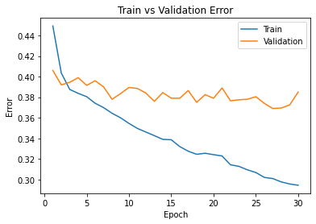
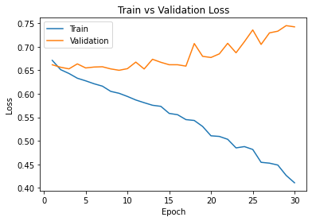

import numpy as np
import time
import torch
import torch.nn as nn
import torch.nn.functional as F
import torch.optim as optim
import torchvision
from torch.utils.data.sampler import SubsetRandomSampler
import torchvision.transforms as transforms
Lab 2: Cats vs Dogs
In this lab, you will train a convolutional neural network to classify an image into one of two classes: “cat” or “dog”. The code for the neural networks you train will be written for you, and you are not (yet!) expected to understand all provided code. However, by the end of the lab, you should be able to:
- Understand at a high level the training loop for a machine learning model.
- Understand the distinction between training, validation, and test data.
- The concepts of overfitting and underfitting.
- Investigate how different hyperparameters, such as learning rate and batch size, affect the success of training.
- Compare an ANN (aka Multi-Layer Perceptron) with a CNN.
What to submit
Submit a PDF file containing all your code, outputs, and write-up from parts 1-5. You can produce a PDF of your Google Colab file by going to File > Print and then save as PDF. The Colab instructions has more information.
Do not submit any other files produced by your code.
Include a link to your colab file in your submission.
Please use Google Colab to complete this assignment. If you want to use Jupyter Notebook, please complete the assignment and upload your Jupyter Notebook file to Google Colab for submission.
With Colab, you can export a PDF file using the menu option File -> Print and save as PDF file. Adjust the scaling to ensure that the text is not cutoff at the margins.
Colab Link
Include a link to your colab file here
Colab Link: https://colab.research.google.com/github/GreatArcStudios/APS360/blob/master/Lab%202/Lab2%20Cats%20vs%20Dogs.ipynb#scrollTo=Rp7LVcGfqID3
Part 0. Helper Functions
We will be making use of the following helper functions. You will be asked to look at and possibly modify some of these, but you are not expected to understand all of them.
You should look at the function names and read the docstrings. If you are curious, come back and explore the code after making some progress on the lab.
###############################################################################
# Data Loading
def get_relevant_indices(dataset, classes, target_classes):
""" Return the indices for datapoints in the dataset that belongs to the
desired target classes, a subset of all possible classes.
Args:
dataset: Dataset object
classes: A list of strings denoting the name of each class
target_classes: A list of strings denoting the name of desired classes
Should be a subset of the 'classes'
Returns:
indices: list of indices that have labels corresponding to one of the
target classes
"""
indices = []
for i in range(len(dataset)):
# Check if the label is in the target classes
label_index = dataset[i][1] # ex: 3
label_class = classes[label_index] # ex: 'cat'
if label_class in target_classes:
indices.append(i)
return indices
def get_data_loader(target_classes, batch_size):
""" Loads images of cats and dogs, splits the data into training, validation
and testing datasets. Returns data loaders for the three preprocessed datasets.
Args:
target_classes: A list of strings denoting the name of the desired
classes. Should be a subset of the argument 'classes'
batch_size: A int representing the number of samples per batch
Returns:
train_loader: iterable training dataset organized according to batch size
val_loader: iterable validation dataset organized according to batch size
test_loader: iterable testing dataset organized according to batch size
classes: A list of strings denoting the name of each class
"""
classes = ('plane', 'car', 'bird', 'cat',
'deer', 'dog', 'frog', 'horse', 'ship', 'truck')
########################################################################
# The output of torchvision datasets are PILImage images of range [0, 1].
# We transform them to Tensors of normalized range [-1, 1].
transform = transforms.Compose(
[transforms.ToTensor(),
transforms.Normalize((0.5, 0.5, 0.5), (0.5, 0.5, 0.5))])
# Load CIFAR10 training data
trainset = torchvision.datasets.CIFAR10(root='./data', train=True,
download=True, transform=transform)
# Get the list of indices to sample from
relevant_indices = get_relevant_indices(trainset, classes, target_classes)
# Split into train and validation
np.random.seed(1000) # Fixed numpy random seed for reproducible shuffling
np.random.shuffle(relevant_indices)
split = int(len(relevant_indices) * 0.8) #split at 80%
# split into training and validation indices
relevant_train_indices, relevant_val_indices = relevant_indices[:split], relevant_indices[split:]
train_sampler = SubsetRandomSampler(relevant_train_indices)
train_loader = torch.utils.data.DataLoader(trainset, batch_size=batch_size,
num_workers=1, sampler=train_sampler)
val_sampler = SubsetRandomSampler(relevant_val_indices)
val_loader = torch.utils.data.DataLoader(trainset, batch_size=batch_size,
num_workers=1, sampler=val_sampler)
# Load CIFAR10 testing data
testset = torchvision.datasets.CIFAR10(root='./data', train=False,
download=True, transform=transform)
# Get the list of indices to sample from
relevant_test_indices = get_relevant_indices(testset, classes, target_classes)
test_sampler = SubsetRandomSampler(relevant_test_indices)
test_loader = torch.utils.data.DataLoader(testset, batch_size=batch_size,
num_workers=1, sampler=test_sampler)
return train_loader, val_loader, test_loader, classes
###############################################################################
# Training
def get_model_name(name, batch_size, learning_rate, epoch):
""" Generate a name for the model consisting of all the hyperparameter values
Args:
config: Configuration object containing the hyperparameters
Returns:
path: A string with the hyperparameter name and value concatenated
"""
path = "model_{0}_bs{1}_lr{2}_epoch{3}".format(name,
batch_size,
learning_rate,
epoch)
return path
def normalize_label(labels):
"""
Given a tensor containing 2 possible values, normalize this to 0/1
Args:
labels: a 1D tensor containing two possible scalar values
Returns:
A tensor normalize to 0/1 value
"""
max_val = torch.max(labels)
min_val = torch.min(labels)
norm_labels = (labels - min_val)/(max_val - min_val)
return norm_labels
def evaluate(net, loader, criterion):
""" Evaluate the network on the validation set.
Args:
net: PyTorch neural network object
loader: PyTorch data loader for the validation set
criterion: The loss function
Returns:
err: A scalar for the avg classification error over the validation set
loss: A scalar for the average loss function over the validation set
"""
total_loss = 0.0
total_err = 0.0
total_epoch = 0
for i, data in enumerate(loader, 0):
inputs, labels = data
labels = normalize_label(labels) # Convert labels to 0/1
outputs = net(inputs)
loss = criterion(outputs, labels.float())
corr = (outputs > 0.0).squeeze().long() != labels
total_err += int(corr.sum())
total_loss += loss.item()
total_epoch += len(labels)
err = float(total_err) / total_epoch
loss = float(total_loss) / (i + 1)
return err, loss
###############################################################################
# Training Curve
def plot_training_curve(path):
""" Plots the training curve for a model run, given the csv files
containing the train/validation error/loss.
Args:
path: The base path of the csv files produced during training
"""
import matplotlib.pyplot as plt
train_err = np.loadtxt("{}_train_err.csv".format(path))
val_err = np.loadtxt("{}_val_err.csv".format(path))
train_loss = np.loadtxt("{}_train_loss.csv".format(path))
val_loss = np.loadtxt("{}_val_loss.csv".format(path))
plt.title("Train vs Validation Error")
n = len(train_err) # number of epochs
plt.plot(range(1,n+1), train_err, label="Train")
plt.plot(range(1,n+1), val_err, label="Validation")
plt.xlabel("Epoch")
plt.ylabel("Error")
plt.legend(loc='best')
plt.show()
plt.title("Train vs Validation Loss")
plt.plot(range(1,n+1), train_loss, label="Train")
plt.plot(range(1,n+1), val_loss, label="Validation")
plt.xlabel("Epoch")
plt.ylabel("Loss")
plt.legend(loc='best')
plt.show()Part 1. Visualizing the Data [7 pt]
We will make use of some of the CIFAR-10 data set, which consists of colour images of size 32x32 pixels belonging to 10 categories. You can find out more about the dataset at https://www.cs.toronto.edu/~kriz/cifar.html
For this assignment, we will only be using the cat and dog categories. We have included code that automatically downloads the dataset the first time that the main script is run.
# This will download the CIFAR-10 dataset to a folder called "data"
# the first time you run this code.
train_loader, val_loader, test_loader, classes = get_data_loader(
target_classes=["cat", "dog"],
batch_size=1) # One image per batchDownloading https://www.cs.toronto.edu/~kriz/cifar-10-python.tar.gz to ./data/cifar-10-python.tar.gzExtracting ./data/cifar-10-python.tar.gz to ./data
Files already downloaded and verifiedPart (a) – 1 pt
Visualize some of the data by running the code below. Include the visualization in your writeup.
(You don’t need to submit anything else.)
import matplotlib.pyplot as plt
k = 0
for images, labels in train_loader:
# since batch_size = 1, there is only 1 image in `images`
image = images[0]
# place the colour channel at the end, instead of at the beginning
img = np.transpose(image, [1,2,0])
# normalize pixel intensity values to [0, 1]
img = img / 2 + 0.5
plt.subplot(3, 5, k+1)
plt.axis('off')
plt.imshow(img)
k += 1
if k > 14:
breakPart (b) – 3 pt
How many training examples do we have for the combined cat and dog classes? What about validation examples? What about test examples?
len(train_loader.dataset), len(val_loader.dataset), len(test_loader.dataset)(50000, 50000, 10000)There is 50000+50000+10000 samples, which is a total of 110000 samples
Part (c) – 3pt
Why do we need a validation set when training our model? What happens if we judge the performance of our models using the training set loss/error instead of the validation set loss/error?
THe validation set is used for tuning hyperparameters, e.g., learning rate, number of hidden units, layers, etc…. This is done to prevent biasing model training to optimize over the test set, which should be “out of sample” data, i.e., the test set is used to mirror new data you’d get when deploying a model. If you tune your hyperparameters on the test set rather than the validation, then you cannot trust your test set loss to be representative of future performance.
Part 2. Training [15 pt]
We define two neural networks, a LargeNet and SmallNet. We’ll be training the networks in this section.
You won’t understand fully what these networks are doing until the next few classes, and that’s okay. For this assignment, please focus on learning how to train networks, and how hyperparameters affect training.
class LargeNet(nn.Module):
def __init__(self):
super(LargeNet, self).__init__()
self.name = "large"
self.conv1 = nn.Conv2d(3, 5, 5)
self.pool = nn.MaxPool2d(2, 2)
self.conv2 = nn.Conv2d(5, 10, 5)
self.fc1 = nn.Linear(10 * 5 * 5, 32)
self.fc2 = nn.Linear(32, 1)
def forward(self, x):
x = self.pool(F.relu(self.conv1(x)))
x = self.pool(F.relu(self.conv2(x)))
x = x.view(-1, 10 * 5 * 5)
x = F.relu(self.fc1(x))
x = self.fc2(x)
x = x.squeeze(1) # Flatten to [batch_size]
return xclass SmallNet(nn.Module):
def __init__(self):
super(SmallNet, self).__init__()
self.name = "small"
self.conv = nn.Conv2d(3, 5, 3)
self.pool = nn.MaxPool2d(2, 2)
self.fc = nn.Linear(5 * 7 * 7, 1)
def forward(self, x):
x = self.pool(F.relu(self.conv(x)))
x = self.pool(x)
x = x.view(-1, 5 * 7 * 7)
x = self.fc(x)
x = x.squeeze(1) # Flatten to [batch_size]
return xsmall_net = SmallNet()
large_net = LargeNet()Part (a) – 2pt
The methods small_net.parameters() and large_net.parameters() produces an iterator of all the trainable parameters of the network. These parameters are torch tensors containing many scalar values.
We haven’t learned how how the parameters in these high-dimensional tensors will be used, but we should be able to count the number of parameters. Measuring the number of parameters in a network is one way of measuring the “size” of a network.
What is the total number of parameters in small_net and in large_net? (Hint: how many numbers are in each tensor?)
for param in small_net.parameters():
print(param.shape)torch.Size([5, 3, 3, 3])
torch.Size([5])
torch.Size([1, 245])
torch.Size([1])for param in large_net.parameters():
print(param.shape)torch.Size([5, 3, 5, 5])
torch.Size([5])
torch.Size([10, 5, 5, 5])
torch.Size([10])
torch.Size([32, 250])
torch.Size([32])
torch.Size([1, 32])
torch.Size([1])From above, we see that small net has a total of \(5 \times 3 \times 3 \times 3 + 5 + 245 + 1 = 386\) parameters, while large net has a total of \(5 \times 3 \times 5 \times 5 + 5 + 10 \times 5^3 + 10 + 32 \times 250 + 32 + 32 + 1 = 9705\) parameters.
The function train_net
The function train_net below takes an untrained neural network (like small_net and large_net) and several other parameters. You should be able to understand how this function works. The figure below shows the high level training loop for a machine learning model:

def train_net(net, batch_size=64, learning_rate=0.01, num_epochs=30):
########################################################################
# Train a classifier on cats vs dogs
target_classes = ["cat", "dog"]
########################################################################
# Fixed PyTorch random seed for reproducible result
torch.manual_seed(1000)
########################################################################
# Obtain the PyTorch data loader objects to load batches of the datasets
train_loader, val_loader, test_loader, classes = get_data_loader(
target_classes, batch_size)
########################################################################
# Define the Loss function and optimizer
# The loss function will be Binary Cross Entropy (BCE). In this case we
# will use the BCEWithLogitsLoss which takes unnormalized output from
# the neural network and scalar label.
# Optimizer will be SGD with Momentum.
criterion = nn.BCEWithLogitsLoss()
optimizer = optim.SGD(net.parameters(), lr=learning_rate, momentum=0.9)
########################################################################
# Set up some numpy arrays to store the training/test loss/erruracy
train_err = np.zeros(num_epochs)
train_loss = np.zeros(num_epochs)
val_err = np.zeros(num_epochs)
val_loss = np.zeros(num_epochs)
########################################################################
# Train the network
# Loop over the data iterator and sample a new batch of training data
# Get the output from the network, and optimize our loss function.
start_time = time.time()
for epoch in range(num_epochs): # loop over the dataset multiple times
total_train_loss = 0.0
total_train_err = 0.0
total_epoch = 0
for i, data in enumerate(train_loader, 0):
# Get the inputs
inputs, labels = data
labels = normalize_label(labels) # Convert labels to 0/1
# Zero the parameter gradients
optimizer.zero_grad()
# Forward pass, backward pass, and optimize
outputs = net(inputs)
loss = criterion(outputs, labels.float())
loss.backward()
optimizer.step()
# Calculate the statistics
corr = (outputs > 0.0).squeeze().long() != labels
total_train_err += int(corr.sum())
total_train_loss += loss.item()
total_epoch += len(labels)
train_err[epoch] = float(total_train_err) / total_epoch
train_loss[epoch] = float(total_train_loss) / (i+1)
val_err[epoch], val_loss[epoch] = evaluate(net, val_loader, criterion)
print(("Epoch {}: Train err: {}, Train loss: {} |"+
"Validation err: {}, Validation loss: {}").format(
epoch + 1,
train_err[epoch],
train_loss[epoch],
val_err[epoch],
val_loss[epoch]))
# Save the current model (checkpoint) to a file
model_path = get_model_name(net.name, batch_size, learning_rate, epoch)
torch.save(net.state_dict(), model_path)
print('Finished Training')
end_time = time.time()
elapsed_time = end_time - start_time
print("Total time elapsed: {:.2f} seconds".format(elapsed_time))
# Write the train/test loss/err into CSV file for plotting later
epochs = np.arange(1, num_epochs + 1)
np.savetxt("{}_train_err.csv".format(model_path), train_err)
np.savetxt("{}_train_loss.csv".format(model_path), train_loss)
np.savetxt("{}_val_err.csv".format(model_path), val_err)
np.savetxt("{}_val_loss.csv".format(model_path), val_loss)Part (b) – 1pt
The parameters to the function train_net are hyperparameters of our neural network. We made these hyperparameters easy to modify so that we can tune them later on.
What are the default values of the parameters batch_size, learning_rate, and num_epochs?
The default parameters for batch_size, learning_rate, and num_epochs respectively are: \(64, 0.01, 30\).
Part (c) – 3 pt
What files are written to disk when we call train_net with small_net, and train for 5 epochs? Provide a list of all the files written to disk, and what information the files contain.
We have the following files:
- The model state dictionary that can be used to reinitalize the model:
model_small_bs64_lr0.01_epoch4 - Training error vector over epochs:
model_small_bs64_lr0.01_epoch4_train_err.csv - Training loss vector over epochs
model_small_bs64_lr0.01_epoch4_train_loss.csv - Validation err vector over epochs
model_small_bs64_lr0.01_epoch4_val_err.csv - Validation loss vector over epochs
model_small_bs64_lr0.01_epoch4_val_loss.csv
Note: we use the following formatting: model_small_bs64_lr0.01_epoch4
Part (d) – 2pt
Train both small_net and large_net using the function train_net and its default parameters. The function will write many files to disk, including a model checkpoint (saved values of model weights) at the end of each epoch.
If you are using Google Colab, you will need to mount Google Drive so that the files generated by train_net gets saved. We will be using these files in part (d). (See the Google Colab tutorial for more information about this.)
Report the total time elapsed when training each network. Which network took longer to train? Why?
# Since the function writes files to disk, you will need to mount
# your Google Drive. If you are working on the lab locally, you
# can comment out this code.
from google.colab import drive
drive.mount('/content/gdrive')small_net_trained = train_net(small_net)
large_net_trained = train_net(large_net)Files already downloaded and verified
Files already downloaded and verified
Epoch 1: Train err: 0.42075, Train loss: 0.6723377504348755 |Validation err: 0.3945, Validation loss: 0.6595788542181253
Epoch 2: Train err: 0.372125, Train loss: 0.6458917841911316 |Validation err: 0.383, Validation loss: 0.6515465062111616
Epoch 3: Train err: 0.343125, Train loss: 0.6254546680450439 |Validation err: 0.3425, Validation loss: 0.6258589867502451
Epoch 4: Train err: 0.337125, Train loss: 0.609498464345932 |Validation err: 0.369, Validation loss: 0.6355494987219572
Epoch 5: Train err: 0.322375, Train loss: 0.5989378657341003 |Validation err: 0.3405, Validation loss: 0.6206743214279413
Epoch 6: Train err: 0.310875, Train loss: 0.5884755213260651 |Validation err: 0.326, Validation loss: 0.6120300143957138
Epoch 7: Train err: 0.310625, Train loss: 0.5866070160865784 |Validation err: 0.321, Validation loss: 0.6046791933476925
Epoch 8: Train err: 0.307125, Train loss: 0.5793938844203949 |Validation err: 0.324, Validation loss: 0.6076856087893248
Epoch 9: Train err: 0.304375, Train loss: 0.5793318803310394 |Validation err: 0.32, Validation loss: 0.6107112914323807
Epoch 10: Train err: 0.298375, Train loss: 0.5729791498184205 |Validation err: 0.324, Validation loss: 0.5990636218339205
Epoch 11: Train err: 0.30175, Train loss: 0.5721399612426757 |Validation err: 0.315, Validation loss: 0.6016753632575274
Epoch 12: Train err: 0.29725, Train loss: 0.5668565320968628 |Validation err: 0.324, Validation loss: 0.6089460058137774
Epoch 13: Train err: 0.296375, Train loss: 0.5697250504493714 |Validation err: 0.3175, Validation loss: 0.6021875496953726
Epoch 14: Train err: 0.291625, Train loss: 0.5643618679046631 |Validation err: 0.3315, Validation loss: 0.6197572741657495
Epoch 15: Train err: 0.295875, Train loss: 0.5622392120361328 |Validation err: 0.323, Validation loss: 0.6083460543304682
Epoch 16: Train err: 0.297375, Train loss: 0.5666043102741242 |Validation err: 0.3185, Validation loss: 0.6069362768903375
Epoch 17: Train err: 0.2915, Train loss: 0.5629100692272186 |Validation err: 0.3105, Validation loss: 0.5950558912009001
Epoch 18: Train err: 0.2915, Train loss: 0.5594740123748779 |Validation err: 0.314, Validation loss: 0.5971398083493114
Epoch 19: Train err: 0.286625, Train loss: 0.5555289885997772 |Validation err: 0.3195, Validation loss: 0.6096482370048761
Epoch 20: Train err: 0.288625, Train loss: 0.5552017977237701 |Validation err: 0.3085, Validation loss: 0.597175769507885
Epoch 21: Train err: 0.290625, Train loss: 0.5562412028312683 |Validation err: 0.3075, Validation loss: 0.5909940749406815
Epoch 22: Train err: 0.288375, Train loss: 0.5543886396884918 |Validation err: 0.316, Validation loss: 0.6057861195877194
Epoch 23: Train err: 0.283125, Train loss: 0.5535137028694153 |Validation err: 0.3095, Validation loss: 0.5987622132524848
Epoch 24: Train err: 0.283875, Train loss: 0.5503103513717651 |Validation err: 0.3045, Validation loss: 0.5935934986919165
Epoch 25: Train err: 0.28025, Train loss: 0.5479731974601746 |Validation err: 0.3045, Validation loss: 0.5936530018225312
Epoch 26: Train err: 0.27925, Train loss: 0.5494892387390137 |Validation err: 0.301, Validation loss: 0.5884830839931965
Epoch 27: Train err: 0.2785, Train loss: 0.5470522263050079 |Validation err: 0.311, Validation loss: 0.6042452156543732
Epoch 28: Train err: 0.2815, Train loss: 0.5472548701763154 |Validation err: 0.301, Validation loss: 0.5863441815599799
Epoch 29: Train err: 0.2795, Train loss: 0.5473523101806641 |Validation err: 0.309, Validation loss: 0.6027381829917431
Epoch 30: Train err: 0.2745, Train loss: 0.5447670686244964 |Validation err: 0.302, Validation loss: 0.5936911879107356
Finished Training
Total time elapsed: 120.52 seconds
Files already downloaded and verified
Files already downloaded and verified
Epoch 1: Train err: 0.46125, Train loss: 0.6916171078681945 |Validation err: 0.443, Validation loss: 0.6835415046662092
Epoch 2: Train err: 0.430625, Train loss: 0.6798879141807557 |Validation err: 0.415, Validation loss: 0.6774508208036423
Epoch 3: Train err: 0.401375, Train loss: 0.6661484107971192 |Validation err: 0.3685, Validation loss: 0.6517221424728632
Epoch 4: Train err: 0.375875, Train loss: 0.6487688703536987 |Validation err: 0.3665, Validation loss: 0.6480504535138607
Epoch 5: Train err: 0.353625, Train loss: 0.6338096480369568 |Validation err: 0.3505, Validation loss: 0.6348792873322964
Epoch 6: Train err: 0.344375, Train loss: 0.6208558247089386 |Validation err: 0.343, Validation loss: 0.6203478295356035
Epoch 7: Train err: 0.333125, Train loss: 0.6081179265975952 |Validation err: 0.342, Validation loss: 0.6148544475436211
Epoch 8: Train err: 0.32, Train loss: 0.5924234871864319 |Validation err: 0.356, Validation loss: 0.6236894335597754
Epoch 9: Train err: 0.313, Train loss: 0.5872985486984252 |Validation err: 0.3445, Validation loss: 0.610544616356492
Epoch 10: Train err: 0.300625, Train loss: 0.568794233083725 |Validation err: 0.329, Validation loss: 0.6003457447513938
Epoch 11: Train err: 0.29025, Train loss: 0.5581837718486786 |Validation err: 0.3205, Validation loss: 0.6016701087355614
Epoch 12: Train err: 0.28125, Train loss: 0.547592334985733 |Validation err: 0.319, Validation loss: 0.5911015504971147
Epoch 13: Train err: 0.278375, Train loss: 0.5375853321552276 |Validation err: 0.306, Validation loss: 0.5952251544222236
Epoch 14: Train err: 0.268125, Train loss: 0.5255287497043609 |Validation err: 0.304, Validation loss: 0.5920366067439318
Epoch 15: Train err: 0.256125, Train loss: 0.5139626488685608 |Validation err: 0.2945, Validation loss: 0.6061807116493583
Epoch 16: Train err: 0.25775, Train loss: 0.5116786625385285 |Validation err: 0.3015, Validation loss: 0.6064690677449107
Epoch 17: Train err: 0.244, Train loss: 0.49486677432060244 |Validation err: 0.301, Validation loss: 0.5971814813092351
Epoch 18: Train err: 0.2345, Train loss: 0.4801792130470276 |Validation err: 0.2965, Validation loss: 0.5946418670937419
Epoch 19: Train err: 0.234125, Train loss: 0.4754448218345642 |Validation err: 0.3165, Validation loss: 0.6154889222234488
Epoch 20: Train err: 0.223625, Train loss: 0.4621390643119812 |Validation err: 0.3165, Validation loss: 0.6338241305202246
Epoch 21: Train err: 0.220875, Train loss: 0.464368599653244 |Validation err: 0.3125, Validation loss: 0.6164801139384508
Epoch 22: Train err: 0.209625, Train loss: 0.4436914005279541 |Validation err: 0.3, Validation loss: 0.6328806057572365
Epoch 23: Train err: 0.205375, Train loss: 0.4357243492603302 |Validation err: 0.309, Validation loss: 0.6253810357302427
Epoch 24: Train err: 0.21, Train loss: 0.43141937732696534 |Validation err: 0.307, Validation loss: 0.6410061353817582
Epoch 25: Train err: 0.193375, Train loss: 0.40701058197021484 |Validation err: 0.317, Validation loss: 0.676498306915164
Epoch 26: Train err: 0.184, Train loss: 0.39435362112522127 |Validation err: 0.2975, Validation loss: 0.6637825602665544
Epoch 27: Train err: 0.17475, Train loss: 0.37933343327045443 |Validation err: 0.3175, Validation loss: 0.7130748368799686
Epoch 28: Train err: 0.170875, Train loss: 0.3698941843509674 |Validation err: 0.31, Validation loss: 0.7016100278124213
Epoch 29: Train err: 0.164375, Train loss: 0.3537975560426712 |Validation err: 0.313, Validation loss: 0.8021152298897505
Epoch 30: Train err: 0.15625, Train loss: 0.34383543050289156 |Validation err: 0.3125, Validation loss: 0.7425412395969033
Finished Training
Total time elapsed: 130.36 secondsSmall net took 120 seconds to train, while large net took 130 seconds. Large net should take longer since it has more parameters, meaning it is requires more operations for the processor to perform gradient descent updates and gradient calculations.
Part (e) - 2pt
Use the function plot_training_curve to display the trajectory of the training/validation error and the training/validation loss. You will need to use the function get_model_name to generate the argument to the plot_training_curve function.
Do this for both the small network and the large network. Include both plots in your writeup.
model_path = get_model_name("small", batch_size=64, learning_rate=0.01, epoch=29)
plot_training_curve(model_path)model_path = get_model_name("large", batch_size=64, learning_rate=0.01, epoch=29)
plot_training_curve(model_path)Part (f) - 5pt
Describe what you notice about the training curve. How do the curves differ for small_net and large_net? Identify any occurences of underfitting and overfitting.
We see that for the small net, the training/validation loss curves look fairly well behaved. In that, the loss still appears to be going for both the validation and training curves, while the error very much is still going down. This means we may still have a somewhat underfit model on the small net, and could require further training. However, on the large net, we see that while the training loss rapidly decreases, the validation loss is going up rapidly too, and the validation error is starting to increase, despite a decreasing training error. This is textbook overfitting as we are memorizing the data noise on the training set for the large net.
Part 3. Optimization Parameters [12 pt]
For this section, we will work with large_net only.
Part (a) - 3pt
Train large_net with all default parameters, except set learning_rate=0.001. Does the model take longer/shorter to train? Plot the training curve. Describe the effect of lowering the learning rate.
# Note: When we re-construct the model, we start the training
# with *random weights*. If we omit this code, the values of
# the weights will still be the previously trained values.
large_net = LargeNet()
large_net_small_lr = train_net(large_net, learning_rate=0.001)
model_path = get_model_name("large", batch_size=64, learning_rate=0.001, epoch=29)
plot_training_curve(model_path)Files already downloaded and verified
Files already downloaded and verified
Epoch 1: Train err: 0.50225, Train loss: 0.6945205240249633 |Validation err: 0.491, Validation loss: 0.6929903607815504
Epoch 2: Train err: 0.50225, Train loss: 0.6930275931358337 |Validation err: 0.491, Validation loss: 0.6924116816371679
Epoch 3: Train err: 0.487375, Train loss: 0.6922533187866211 |Validation err: 0.4765, Validation loss: 0.6920256800949574
Epoch 4: Train err: 0.448625, Train loss: 0.6916869764328003 |Validation err: 0.4515, Validation loss: 0.6913820113986731
Epoch 5: Train err: 0.44225, Train loss: 0.6910718812942505 |Validation err: 0.4415, Validation loss: 0.6910950168967247
Epoch 6: Train err: 0.44025, Train loss: 0.6903757758140564 |Validation err: 0.437, Validation loss: 0.6905075237154961
Epoch 7: Train err: 0.43825, Train loss: 0.6895534009933472 |Validation err: 0.434, Validation loss: 0.6896947920322418
Epoch 8: Train err: 0.439, Train loss: 0.6884737334251404 |Validation err: 0.434, Validation loss: 0.6885984409600496
Epoch 9: Train err: 0.44175, Train loss: 0.6872530660629272 |Validation err: 0.4295, Validation loss: 0.6871623415499926
Epoch 10: Train err: 0.437875, Train loss: 0.6858069658279419 |Validation err: 0.434, Validation loss: 0.6850543189793825
Epoch 11: Train err: 0.4345, Train loss: 0.6841950092315674 |Validation err: 0.4205, Validation loss: 0.6841866672039032
Epoch 12: Train err: 0.4345, Train loss: 0.6825841746330261 |Validation err: 0.419, Validation loss: 0.6819446533918381
Epoch 13: Train err: 0.43225, Train loss: 0.6807464566230774 |Validation err: 0.4175, Validation loss: 0.6816667225211859
Epoch 14: Train err: 0.42825, Train loss: 0.6788556156158447 |Validation err: 0.4175, Validation loss: 0.6788446605205536
Epoch 15: Train err: 0.424, Train loss: 0.6770424566268921 |Validation err: 0.413, Validation loss: 0.6754834149032831
Epoch 16: Train err: 0.418125, Train loss: 0.6749243412017822 |Validation err: 0.4065, Validation loss: 0.6747626569122076
Epoch 17: Train err: 0.417125, Train loss: 0.6727307920455933 |Validation err: 0.4115, Validation loss: 0.6704361904412508
Epoch 18: Train err: 0.40875, Train loss: 0.6701569061279297 |Validation err: 0.4005, Validation loss: 0.6655368059873581
Epoch 19: Train err: 0.39925, Train loss: 0.6673338022232056 |Validation err: 0.3945, Validation loss: 0.6644115764647722
Epoch 20: Train err: 0.391, Train loss: 0.663942033290863 |Validation err: 0.391, Validation loss: 0.6599431801587343
Epoch 21: Train err: 0.39, Train loss: 0.6602936053276062 |Validation err: 0.382, Validation loss: 0.6557178888469934
Epoch 22: Train err: 0.38175, Train loss: 0.6565788884162903 |Validation err: 0.376, Validation loss: 0.6531744468957186
Epoch 23: Train err: 0.373375, Train loss: 0.6524632716178894 |Validation err: 0.37, Validation loss: 0.6488656289875507
Epoch 24: Train err: 0.371625, Train loss: 0.6493743572235108 |Validation err: 0.3585, Validation loss: 0.6445911936461926
Epoch 25: Train err: 0.365625, Train loss: 0.6442021884918213 |Validation err: 0.363, Validation loss: 0.6385357119143009
Epoch 26: Train err: 0.36525, Train loss: 0.6422023077011109 |Validation err: 0.3655, Validation loss: 0.6385648865252733
Epoch 27: Train err: 0.362, Train loss: 0.6383951888084411 |Validation err: 0.359, Validation loss: 0.6358510740101337
Epoch 28: Train err: 0.358125, Train loss: 0.6363182072639465 |Validation err: 0.354, Validation loss: 0.6309074368327856
Epoch 29: Train err: 0.35375, Train loss: 0.634887017250061 |Validation err: 0.35, Validation loss: 0.6337497364729643
Epoch 30: Train err: 0.3545, Train loss: 0.6319920964241028 |Validation err: 0.357, Validation loss: 0.6304985918104649
Finished Training
Total time elapsed: 133.02 secondsTraining took roughly the same amount of time, i.e., 130 seconds vs 133 seconds.This makes sense as we are just multiplying the gradient computation by a smaller amount, so the operations are the same. However, we do see that the loss curves are much better behaved, i.e., we haven’t started to overfit yet, and it appears that we can keep training the model (currently underfit). The training error is higher while the validation error is about the same as the default parameters. The loss curves are also a lot smoother as we don’t “bounce” around the loss landscape nearly as much with a smaller learning rate.
Part (b) - 3pt
Train large_net with all default parameters, except set learning_rate=0.1. Does the model take longer/shorter to train? Plot the training curve. Describe the effect of increasing the learning rate.
large_net = LargeNet()
large_net_large_lr = train_net(large_net, learning_rate=0.1)
model_path = get_model_name("large", batch_size=64, learning_rate=0.1, epoch=29)
plot_training_curve(model_path)Files already downloaded and verified
Files already downloaded and verified
Epoch 1: Train err: 0.467625, Train loss: 0.6861868515014649 |Validation err: 0.4215, Validation loss: 0.6740307230502367
Epoch 2: Train err: 0.39, Train loss: 0.6569749841690063 |Validation err: 0.391, Validation loss: 0.6574704591184855
Epoch 3: Train err: 0.355125, Train loss: 0.6253251066207886 |Validation err: 0.3505, Validation loss: 0.620346087962389
Epoch 4: Train err: 0.329125, Train loss: 0.606244039773941 |Validation err: 0.3575, Validation loss: 0.6671020425856113
Epoch 5: Train err: 0.326, Train loss: 0.5957692120075225 |Validation err: 0.334, Validation loss: 0.5925362259149551
Epoch 6: Train err: 0.303375, Train loss: 0.575137921333313 |Validation err: 0.3205, Validation loss: 0.6100335158407688
Epoch 7: Train err: 0.304, Train loss: 0.5726823313236237 |Validation err: 0.317, Validation loss: 0.6183756990358233
Epoch 8: Train err: 0.288625, Train loss: 0.5487984850406646 |Validation err: 0.323, Validation loss: 0.5915514379739761
Epoch 9: Train err: 0.284375, Train loss: 0.540764660358429 |Validation err: 0.332, Validation loss: 0.6098141325637698
Epoch 10: Train err: 0.28525, Train loss: 0.543907998085022 |Validation err: 0.344, Validation loss: 0.6419565323740244
Epoch 11: Train err: 0.276, Train loss: 0.5359194176197052 |Validation err: 0.3245, Validation loss: 0.6399335693567991
Epoch 12: Train err: 0.266875, Train loss: 0.527840470790863 |Validation err: 0.3135, Validation loss: 0.6438787821680307
Epoch 13: Train err: 0.263625, Train loss: 0.5145214052200318 |Validation err: 0.316, Validation loss: 0.6905622445046902
Epoch 14: Train err: 0.257, Train loss: 0.5103720374107361 |Validation err: 0.3115, Validation loss: 0.670242452993989
Epoch 15: Train err: 0.24025, Train loss: 0.4889113302230835 |Validation err: 0.3165, Validation loss: 0.6930663185194135
Epoch 16: Train err: 0.250375, Train loss: 0.49782308340072634 |Validation err: 0.337, Validation loss: 0.6436392497271299
Epoch 17: Train err: 0.245125, Train loss: 0.4957301735877991 |Validation err: 0.3245, Validation loss: 0.6691232575103641
Epoch 18: Train err: 0.237375, Train loss: 0.4781391134262085 |Validation err: 0.3275, Validation loss: 0.683715783059597
Epoch 19: Train err: 0.2505, Train loss: 0.5043014485836029 |Validation err: 0.349, Validation loss: 0.7344501707702875
Epoch 20: Train err: 0.233625, Train loss: 0.47596864688396456 |Validation err: 0.3285, Validation loss: 0.7142069041728973
Epoch 21: Train err: 0.241375, Train loss: 0.48449467778205874 |Validation err: 0.342, Validation loss: 0.7656483091413975
Epoch 22: Train err: 0.24725, Train loss: 0.4931287405490875 |Validation err: 0.332, Validation loss: 0.8585414439439774
Epoch 23: Train err: 0.241625, Train loss: 0.48796604776382446 |Validation err: 0.3305, Validation loss: 0.818379333242774
Epoch 24: Train err: 0.24925, Train loss: 0.4914700272083282 |Validation err: 0.3425, Validation loss: 0.8604169189929962
Epoch 25: Train err: 0.266125, Train loss: 0.5153710978031159 |Validation err: 0.331, Validation loss: 0.7632325710728765
Epoch 26: Train err: 0.25825, Train loss: 0.5016732423305511 |Validation err: 0.3445, Validation loss: 0.8430985994637012
Epoch 27: Train err: 0.236875, Train loss: 0.4666298909187317 |Validation err: 0.346, Validation loss: 0.803265543654561
Epoch 28: Train err: 0.237375, Train loss: 0.4621445622444153 |Validation err: 0.345, Validation loss: 0.8684306722134352
Epoch 29: Train err: 0.2405, Train loss: 0.4829731698036194 |Validation err: 0.3515, Validation loss: 0.906199125573039
Epoch 30: Train err: 0.2805, Train loss: 0.5351826040744782 |Validation err: 0.389, Validation loss: 0.7011800371110439
Finished Training
Total time elapsed: 128.78 secondsTraining took roughly the same amount of time, i.e., 130 seconds vs 128 seconds.This makes sense as we are just multiplying the gradient computation by a smaller amount, so the operations are the same. However, we do see that the loss curves are poorly behaved in that the validation loss is going up quite a bit, and even the training loss is too. This is also a very unstable curve since the loss curves are not smoother, which is due to the optimizer “bouncing” around the loss landscape when the learning rate is too high (steps towards the global minima are too large). Also the model is overfit as training error is much lower than the validation error and both are going up.
Part (c) - 3pt
Train large_net with all default parameters, including with learning_rate=0.01. Now, set batch_size=512. Does the model take longer/shorter to train? Plot the training curve. Describe the effect of increasing the batch size.
large_net = LargeNet()
large_net_large_batch = train_net(large_net, batch_size=512)
model_path = get_model_name("large", batch_size=512, learning_rate=0.01, epoch=29)
plot_training_curve(model_path)Files already downloaded and verified
Files already downloaded and verified
Epoch 1: Train err: 0.48175, Train loss: 0.6929379552602768 |Validation err: 0.478, Validation loss: 0.6926824003458023
Epoch 2: Train err: 0.457625, Train loss: 0.6924104019999504 |Validation err: 0.434, Validation loss: 0.6917425245046616
Epoch 3: Train err: 0.437, Train loss: 0.6916500590741634 |Validation err: 0.4265, Validation loss: 0.6909129917621613
Epoch 4: Train err: 0.433625, Train loss: 0.6908449940383434 |Validation err: 0.424, Validation loss: 0.6897870451211929
Epoch 5: Train err: 0.434, Train loss: 0.6896935552358627 |Validation err: 0.424, Validation loss: 0.6881355047225952
Epoch 6: Train err: 0.438, Train loss: 0.688353206962347 |Validation err: 0.4285, Validation loss: 0.686011865735054
Epoch 7: Train err: 0.439375, Train loss: 0.6866871677339077 |Validation err: 0.426, Validation loss: 0.6836968809366226
Epoch 8: Train err: 0.43525, Train loss: 0.6849770769476891 |Validation err: 0.4115, Validation loss: 0.6814671903848648
Epoch 9: Train err: 0.42375, Train loss: 0.6832009293138981 |Validation err: 0.414, Validation loss: 0.679591491818428
Epoch 10: Train err: 0.421, Train loss: 0.6811089366674423 |Validation err: 0.416, Validation loss: 0.6771548539400101
Epoch 11: Train err: 0.420875, Train loss: 0.6794026419520378 |Validation err: 0.4095, Validation loss: 0.6748111099004745
Epoch 12: Train err: 0.41475, Train loss: 0.6768048219382763 |Validation err: 0.412, Validation loss: 0.6737060546875
Epoch 13: Train err: 0.4105, Train loss: 0.6749702803790569 |Validation err: 0.412, Validation loss: 0.6706101596355438
Epoch 14: Train err: 0.407125, Train loss: 0.6730880849063396 |Validation err: 0.4125, Validation loss: 0.6692148000001907
Epoch 15: Train err: 0.4005, Train loss: 0.6706806942820549 |Validation err: 0.4105, Validation loss: 0.667252704501152
Epoch 16: Train err: 0.397625, Train loss: 0.6691771410405636 |Validation err: 0.405, Validation loss: 0.6649097055196762
Epoch 17: Train err: 0.393875, Train loss: 0.6675694733858109 |Validation err: 0.401, Validation loss: 0.6630224883556366
Epoch 18: Train err: 0.393, Train loss: 0.6648042872548103 |Validation err: 0.3945, Validation loss: 0.6624014377593994
Epoch 19: Train err: 0.38625, Train loss: 0.662746611982584 |Validation err: 0.388, Validation loss: 0.6597220152616501
Epoch 20: Train err: 0.38175, Train loss: 0.6596181839704514 |Validation err: 0.4005, Validation loss: 0.6564337313175201
Epoch 21: Train err: 0.38575, Train loss: 0.6584899798035622 |Validation err: 0.3885, Validation loss: 0.6586423963308334
Epoch 22: Train err: 0.378125, Train loss: 0.655123382806778 |Validation err: 0.3855, Validation loss: 0.6528600305318832
Epoch 23: Train err: 0.372125, Train loss: 0.6508794128894806 |Validation err: 0.3835, Validation loss: 0.6497963815927505
Epoch 24: Train err: 0.37675, Train loss: 0.6488028429448605 |Validation err: 0.385, Validation loss: 0.6474899500608444
Epoch 25: Train err: 0.368625, Train loss: 0.6445869170129299 |Validation err: 0.382, Validation loss: 0.6473268568515778
Epoch 26: Train err: 0.372625, Train loss: 0.6428566053509712 |Validation err: 0.3745, Validation loss: 0.6425703465938568
Epoch 27: Train err: 0.359375, Train loss: 0.6372117549180984 |Validation err: 0.379, Validation loss: 0.6397799849510193
Epoch 28: Train err: 0.35425, Train loss: 0.6337667480111122 |Validation err: 0.3695, Validation loss: 0.6403783112764359
Epoch 29: Train err: 0.3535, Train loss: 0.6311353109776974 |Validation err: 0.366, Validation loss: 0.6335585117340088
Epoch 30: Train err: 0.353, Train loss: 0.6283832415938377 |Validation err: 0.3675, Validation loss: 0.6324127316474915
Finished Training
Total time elapsed: 117.97 secondsTraining with a larger batch led to shorter training times, i.e., 118 seconds vs 130 seconds. Additionally, the loss curves are better behaved, i.e., they are not overfit and the validation curves closely follows that of the training curve. Also, the model doesn’t overfit as fast and has more stable curves, i.e., they are smoother.
Part (d) - 3pt
Train large_net with all default parameters, including with learning_rate=0.01. Now, set batch_size=16. Does the model take longer/shorter to train? Plot the training curve. Describe the effect of decreasing the batch size.
large_net = LargeNet()
large_net_small_batch = train_net(large_net, batch_size=16)
model_path = get_model_name("large", batch_size=16, learning_rate=0.01, epoch=29)
plot_training_curve(model_path)Files already downloaded and verified
Files already downloaded and verified
Epoch 1: Train err: 0.43175, Train loss: 0.6774994022846222 |Validation err: 0.382, Validation loss: 0.6513170118331909
Epoch 2: Train err: 0.369, Train loss: 0.639639899969101 |Validation err: 0.3465, Validation loss: 0.6161113576889038
Epoch 3: Train err: 0.34375, Train loss: 0.6098222947120666 |Validation err: 0.3325, Validation loss: 0.6260210764408112
Epoch 4: Train err: 0.314375, Train loss: 0.5849691489338875 |Validation err: 0.34, Validation loss: 0.6044013917446136
Epoch 5: Train err: 0.301125, Train loss: 0.5689119303822517 |Validation err: 0.3125, Validation loss: 0.576918310880661
Epoch 6: Train err: 0.281, Train loss: 0.5452213581204415 |Validation err: 0.308, Validation loss: 0.5708447456359863
Epoch 7: Train err: 0.270875, Train loss: 0.5272981298565864 |Validation err: 0.307, Validation loss: 0.5854293291568756
Epoch 8: Train err: 0.259375, Train loss: 0.5070905526578426 |Validation err: 0.313, Validation loss: 0.5877130818367005
Epoch 9: Train err: 0.242375, Train loss: 0.4968344421982765 |Validation err: 0.313, Validation loss: 0.5922425072193146
Epoch 10: Train err: 0.236375, Train loss: 0.4756101597249508 |Validation err: 0.297, Validation loss: 0.5718690166473389
Epoch 11: Train err: 0.222125, Train loss: 0.4599769461452961 |Validation err: 0.2975, Validation loss: 0.6376970833539963
Epoch 12: Train err: 0.211, Train loss: 0.4454492371380329 |Validation err: 0.2995, Validation loss: 0.609202565908432
Epoch 13: Train err: 0.19875, Train loss: 0.4245421719551086 |Validation err: 0.3075, Validation loss: 0.6494987765550614
Epoch 14: Train err: 0.18675, Train loss: 0.4007472907453775 |Validation err: 0.3085, Validation loss: 0.6610016552209854
Epoch 15: Train err: 0.1645, Train loss: 0.3759974058121443 |Validation err: 0.3105, Validation loss: 0.7106090537309646
Epoch 16: Train err: 0.16125, Train loss: 0.3591455406397581 |Validation err: 0.3005, Validation loss: 0.7310364942550659
Epoch 17: Train err: 0.15775, Train loss: 0.3463234790861607 |Validation err: 0.307, Validation loss: 0.7263009325265884
Epoch 18: Train err: 0.141625, Train loss: 0.32175366275012496 |Validation err: 0.3195, Validation loss: 0.7913952842950821
Epoch 19: Train err: 0.13375, Train loss: 0.30618105667084455 |Validation err: 0.335, Validation loss: 0.8032052783966065
Epoch 20: Train err: 0.126625, Train loss: 0.3029071792438626 |Validation err: 0.32, Validation loss: 0.8106685240268707
Epoch 21: Train err: 0.12025, Train loss: 0.28682796490937473 |Validation err: 0.3205, Validation loss: 0.8259474284648896
Epoch 22: Train err: 0.1165, Train loss: 0.27489088076353074 |Validation err: 0.352, Validation loss: 0.8937610774040222
Epoch 23: Train err: 0.104375, Train loss: 0.2467898527495563 |Validation err: 0.3315, Validation loss: 1.0021928198337555
Epoch 24: Train err: 0.101, Train loss: 0.23970085787773132 |Validation err: 0.331, Validation loss: 1.1290796399116516
Epoch 25: Train err: 0.09575, Train loss: 0.23643119425699116 |Validation err: 0.3315, Validation loss: 1.1338514368534087
Epoch 26: Train err: 0.094125, Train loss: 0.2325953512713313 |Validation err: 0.3365, Validation loss: 1.1414263204336166
Epoch 27: Train err: 0.08425, Train loss: 0.21040759468451142 |Validation err: 0.3335, Validation loss: 1.1823678107261657
Epoch 28: Train err: 0.0825, Train loss: 0.20643112615589052 |Validation err: 0.323, Validation loss: 1.266836181640625
Epoch 29: Train err: 0.0845, Train loss: 0.21273409337876364 |Validation err: 0.3245, Validation loss: 1.406717705130577
Epoch 30: Train err: 0.071375, Train loss: 0.18387044295761734 |Validation err: 0.345, Validation loss: 1.4871552000045776
Finished Training
Total time elapsed: 188.18 secondsTraining with a smaller batch led to longer training times, i.e., 188 seconds vs 130 seconds. Additionally, the loss curves are poorly behaved, i.e., they are clearly overfit (validation loss/error much higher than training loss/error and increasing while training loss/error is still decreasing). Also, while the curves are fairly smooth, the model seems to immedately overfit, meaning the optimizer is going into rather poor regions of the loss landscape that have bad local optima, where associated parameters correlate to fitting data noise.
Part 4. Hyperparameter Search [6 pt]
Part (a) - 2pt
Based on the plots from above, choose another set of values for the hyperparameters (network, batch_size, learning_rate) that you think would help you improve the validation accuracy. Justify your choice.
If we are comfortable with a longer training period, we can choose a smaller learning_rate, especially with a larger network. This helps smooth out the loss curves as we take smaller steps towards the global minima. Further, we can take a larger (but not too large) batch_size in order to help improve genearlization on this dataset. We should also use the large network as it has more capacity (more parameters/layers) that would help model genearlization.
So I propose:
learning_rate= 0.006batch_size= 256num_epochs= 150
Part (b) - 1pt
Train the model with the hyperparameters you chose in part(a), and include the training curve.
large_net = LargeNet()
large_net_custom_1 = train_net(large_net, batch_size=256, learning_rate=0.006, num_epochs=150)
model_path = get_model_name("large", batch_size=256, learning_rate=0.006, epoch=149)
plot_training_curve(model_path)Files already downloaded and verified
Files already downloaded and verified
Epoch 1: Train err: 0.47525, Train loss: 0.6928301826119423 |Validation err: 0.4635, Validation loss: 0.6923908442258835
Epoch 2: Train err: 0.448625, Train loss: 0.6920892838388681 |Validation err: 0.4395, Validation loss: 0.6911498829722404
Epoch 3: Train err: 0.431125, Train loss: 0.6911100950092077 |Validation err: 0.416, Validation loss: 0.6899418979883194
Epoch 4: Train err: 0.430625, Train loss: 0.6896353028714657 |Validation err: 0.421, Validation loss: 0.6877869814634323
Epoch 5: Train err: 0.437625, Train loss: 0.6878515146672726 |Validation err: 0.424, Validation loss: 0.6849464699625969
Epoch 6: Train err: 0.43275, Train loss: 0.6858931612223387 |Validation err: 0.4165, Validation loss: 0.6822742894291878
Epoch 7: Train err: 0.43025, Train loss: 0.6835607439279556 |Validation err: 0.4115, Validation loss: 0.6794741526246071
Epoch 8: Train err: 0.42375, Train loss: 0.6814770270138979 |Validation err: 0.4135, Validation loss: 0.6778449863195419
Epoch 9: Train err: 0.4155, Train loss: 0.6791375018656254 |Validation err: 0.409, Validation loss: 0.6735644787549973
Epoch 10: Train err: 0.41325, Train loss: 0.6772175505757332 |Validation err: 0.4085, Validation loss: 0.67115318775177
Epoch 11: Train err: 0.41175, Train loss: 0.6741531416773796 |Validation err: 0.41, Validation loss: 0.6711635738611221
Epoch 12: Train err: 0.404875, Train loss: 0.6706440430134535 |Validation err: 0.4085, Validation loss: 0.6676583886146545
Epoch 13: Train err: 0.399625, Train loss: 0.6695251110941172 |Validation err: 0.399, Validation loss: 0.6663444563746452
Epoch 14: Train err: 0.3955, Train loss: 0.6673812586814165 |Validation err: 0.3995, Validation loss: 0.6633675023913383
Epoch 15: Train err: 0.393, Train loss: 0.6641833987087011 |Validation err: 0.3935, Validation loss: 0.6614179089665413
Epoch 16: Train err: 0.3885, Train loss: 0.6604212839156389 |Validation err: 0.3895, Validation loss: 0.6574511304497719
Epoch 17: Train err: 0.38075, Train loss: 0.658942686393857 |Validation err: 0.396, Validation loss: 0.6548776105046272
Epoch 18: Train err: 0.377, Train loss: 0.6567721255123615 |Validation err: 0.388, Validation loss: 0.6526920646429062
Epoch 19: Train err: 0.3735, Train loss: 0.6510208249092102 |Validation err: 0.385, Validation loss: 0.650236189365387
Epoch 20: Train err: 0.368, Train loss: 0.6451032403856516 |Validation err: 0.374, Validation loss: 0.6463024690747261
Epoch 21: Train err: 0.365125, Train loss: 0.6429767720401287 |Validation err: 0.3745, Validation loss: 0.6407243758440018
Epoch 22: Train err: 0.359875, Train loss: 0.6384326964616776 |Validation err: 0.367, Validation loss: 0.6373329758644104
Epoch 23: Train err: 0.351875, Train loss: 0.634610041975975 |Validation err: 0.37, Validation loss: 0.6374926418066025
Epoch 24: Train err: 0.35525, Train loss: 0.6322696879506111 |Validation err: 0.3655, Validation loss: 0.632851630449295
Epoch 25: Train err: 0.344875, Train loss: 0.6252214908599854 |Validation err: 0.359, Validation loss: 0.631788931787014
Epoch 26: Train err: 0.347375, Train loss: 0.6217316184192896 |Validation err: 0.362, Validation loss: 0.6317758485674858
Epoch 27: Train err: 0.34775, Train loss: 0.61972482688725 |Validation err: 0.352, Validation loss: 0.6281407028436661
Epoch 28: Train err: 0.344375, Train loss: 0.616970457136631 |Validation err: 0.3605, Validation loss: 0.632731057703495
Epoch 29: Train err: 0.34725, Train loss: 0.6153552904725075 |Validation err: 0.344, Validation loss: 0.6209410205483437
Epoch 30: Train err: 0.3415, Train loss: 0.6163260713219643 |Validation err: 0.34, Validation loss: 0.6217817440629005
Epoch 31: Train err: 0.338, Train loss: 0.6108253505080938 |Validation err: 0.3385, Validation loss: 0.6185756772756577
Epoch 32: Train err: 0.33525, Train loss: 0.6062465161085129 |Validation err: 0.3345, Validation loss: 0.6177384927868843
Epoch 33: Train err: 0.332125, Train loss: 0.6036703959107399 |Validation err: 0.3425, Validation loss: 0.616181492805481
Epoch 34: Train err: 0.329125, Train loss: 0.6026168316602707 |Validation err: 0.3295, Validation loss: 0.6137040629982948
Epoch 35: Train err: 0.32525, Train loss: 0.5965587478131056 |Validation err: 0.3315, Validation loss: 0.6101551577448845
Epoch 36: Train err: 0.323, Train loss: 0.58942985907197 |Validation err: 0.325, Validation loss: 0.6075432896614075
Epoch 37: Train err: 0.318625, Train loss: 0.5935651641339064 |Validation err: 0.332, Validation loss: 0.610814169049263
Epoch 38: Train err: 0.317375, Train loss: 0.5899881776422262 |Validation err: 0.322, Validation loss: 0.6038084328174591
Epoch 39: Train err: 0.314625, Train loss: 0.5820056162774563 |Validation err: 0.317, Validation loss: 0.6018405854701996
Epoch 40: Train err: 0.31, Train loss: 0.5779258571565151 |Validation err: 0.3275, Validation loss: 0.6055354923009872
Epoch 41: Train err: 0.3075, Train loss: 0.5769532769918442 |Validation err: 0.323, Validation loss: 0.5970466509461403
Epoch 42: Train err: 0.30625, Train loss: 0.5691406931728125 |Validation err: 0.33, Validation loss: 0.6060737669467926
Epoch 43: Train err: 0.300125, Train loss: 0.5677790101617575 |Validation err: 0.3195, Validation loss: 0.5971647724509239
Epoch 44: Train err: 0.296375, Train loss: 0.5652447436004877 |Validation err: 0.3235, Validation loss: 0.5985464528203011
Epoch 45: Train err: 0.297125, Train loss: 0.5571357104927301 |Validation err: 0.325, Validation loss: 0.6139731183648109
Epoch 46: Train err: 0.297125, Train loss: 0.5639094654470682 |Validation err: 0.314, Validation loss: 0.5964723378419876
Epoch 47: Train err: 0.294, Train loss: 0.5593381598591805 |Validation err: 0.313, Validation loss: 0.5923695042729378
Epoch 48: Train err: 0.289125, Train loss: 0.5498161353170872 |Validation err: 0.315, Validation loss: 0.5949789881706238
Epoch 49: Train err: 0.286, Train loss: 0.5449566459283233 |Validation err: 0.3115, Validation loss: 0.5922421514987946
Epoch 50: Train err: 0.284125, Train loss: 0.5410005338490009 |Validation err: 0.3105, Validation loss: 0.5912472531199455
Epoch 51: Train err: 0.275375, Train loss: 0.5423429952934384 |Validation err: 0.313, Validation loss: 0.5942423716187477
Epoch 52: Train err: 0.281, Train loss: 0.5421533472836018 |Validation err: 0.307, Validation loss: 0.5896376892924309
Epoch 53: Train err: 0.276625, Train loss: 0.5388263547793031 |Validation err: 0.309, Validation loss: 0.5883307754993439
Epoch 54: Train err: 0.26775, Train loss: 0.5300652738660574 |Validation err: 0.3065, Validation loss: 0.5890155285596848
Epoch 55: Train err: 0.268, Train loss: 0.528857572004199 |Validation err: 0.3035, Validation loss: 0.5921583697199821
Epoch 56: Train err: 0.26675, Train loss: 0.5262993331998587 |Validation err: 0.308, Validation loss: 0.5870523229241371
Epoch 57: Train err: 0.26575, Train loss: 0.5246628616005182 |Validation err: 0.3075, Validation loss: 0.5875528827309608
Epoch 58: Train err: 0.261625, Train loss: 0.5234110914170742 |Validation err: 0.3045, Validation loss: 0.5928555056452751
Epoch 59: Train err: 0.26375, Train loss: 0.5187957966700196 |Validation err: 0.3055, Validation loss: 0.5889212787151337
Epoch 60: Train err: 0.254375, Train loss: 0.5125386584550142 |Validation err: 0.308, Validation loss: 0.5883512049913406
Epoch 61: Train err: 0.25575, Train loss: 0.5123818358406425 |Validation err: 0.304, Validation loss: 0.591929242014885
Epoch 62: Train err: 0.251875, Train loss: 0.5100651849061251 |Validation err: 0.3125, Validation loss: 0.5935478806495667
Epoch 63: Train err: 0.251375, Train loss: 0.5070849740877748 |Validation err: 0.305, Validation loss: 0.5957782790064812
Epoch 64: Train err: 0.25125, Train loss: 0.5057728411629796 |Validation err: 0.313, Validation loss: 0.5875761732459068
Epoch 65: Train err: 0.2495, Train loss: 0.5048461621627212 |Validation err: 0.301, Validation loss: 0.580414205789566
Epoch 66: Train err: 0.2445, Train loss: 0.4974956065416336 |Validation err: 0.296, Validation loss: 0.5826619118452072
Epoch 67: Train err: 0.24275, Train loss: 0.4910230487585068 |Validation err: 0.308, Validation loss: 0.59615408629179
Epoch 68: Train err: 0.238625, Train loss: 0.49132071156054735 |Validation err: 0.306, Validation loss: 0.5950616300106049
Epoch 69: Train err: 0.24375, Train loss: 0.49216268211603165 |Validation err: 0.2915, Validation loss: 0.582151435315609
Epoch 70: Train err: 0.23675, Train loss: 0.4822801472619176 |Validation err: 0.2965, Validation loss: 0.5858652740716934
Epoch 71: Train err: 0.23725, Train loss: 0.4832655331119895 |Validation err: 0.3105, Validation loss: 0.5980193391442299
Epoch 72: Train err: 0.22625, Train loss: 0.48279030434787273 |Validation err: 0.297, Validation loss: 0.5882091820240021
Epoch 73: Train err: 0.233125, Train loss: 0.4816231867298484 |Validation err: 0.286, Validation loss: 0.5837018489837646
Epoch 74: Train err: 0.2295, Train loss: 0.47824827022850513 |Validation err: 0.306, Validation loss: 0.6123858243227005
Epoch 75: Train err: 0.228375, Train loss: 0.471593564376235 |Validation err: 0.301, Validation loss: 0.594571478664875
Epoch 76: Train err: 0.2205, Train loss: 0.4656660743057728 |Validation err: 0.2985, Validation loss: 0.5969205647706985
Epoch 77: Train err: 0.220625, Train loss: 0.4651225982233882 |Validation err: 0.298, Validation loss: 0.5912974551320076
Epoch 78: Train err: 0.224875, Train loss: 0.4658273411914706 |Validation err: 0.3005, Validation loss: 0.5896570011973381
Epoch 79: Train err: 0.225625, Train loss: 0.4661049945279956 |Validation err: 0.297, Validation loss: 0.6075373962521553
Epoch 80: Train err: 0.220125, Train loss: 0.4618999632075429 |Validation err: 0.2995, Validation loss: 0.5916886851191521
Epoch 81: Train err: 0.210875, Train loss: 0.45358242373913527 |Validation err: 0.2945, Validation loss: 0.5967906042933464
Epoch 82: Train err: 0.212625, Train loss: 0.45234073232859373 |Validation err: 0.2975, Validation loss: 0.5974470004439354
Epoch 83: Train err: 0.212375, Train loss: 0.4504633955657482 |Validation err: 0.2985, Validation loss: 0.6016383618116379
Epoch 84: Train err: 0.213, Train loss: 0.4520760914310813 |Validation err: 0.3095, Validation loss: 0.6060432568192482
Epoch 85: Train err: 0.213125, Train loss: 0.44944946840405464 |Validation err: 0.2975, Validation loss: 0.6093294024467468
Epoch 86: Train err: 0.206625, Train loss: 0.4448174713179469 |Validation err: 0.3125, Validation loss: 0.6442451924085617
Epoch 87: Train err: 0.214, Train loss: 0.449812525883317 |Validation err: 0.306, Validation loss: 0.6354952827095985
Epoch 88: Train err: 0.217375, Train loss: 0.4553459417074919 |Validation err: 0.3065, Validation loss: 0.6022177115082741
Epoch 89: Train err: 0.206375, Train loss: 0.43831581622362137 |Validation err: 0.297, Validation loss: 0.6019733771681786
Epoch 90: Train err: 0.2115, Train loss: 0.44507231935858727 |Validation err: 0.3075, Validation loss: 0.6080936416983604
Epoch 91: Train err: 0.2035, Train loss: 0.439149240963161 |Validation err: 0.307, Validation loss: 0.6206741705536842
Epoch 92: Train err: 0.207125, Train loss: 0.43998841010034084 |Validation err: 0.2995, Validation loss: 0.612362913787365
Epoch 93: Train err: 0.194, Train loss: 0.424812245182693 |Validation err: 0.295, Validation loss: 0.6216462403535843
Epoch 94: Train err: 0.19825, Train loss: 0.4236988201737404 |Validation err: 0.308, Validation loss: 0.6376180797815323
Epoch 95: Train err: 0.2015, Train loss: 0.4287644922733307 |Validation err: 0.3075, Validation loss: 0.6436270624399185
Epoch 96: Train err: 0.194625, Train loss: 0.42641882319003344 |Validation err: 0.302, Validation loss: 0.6244242489337921
Epoch 97: Train err: 0.194, Train loss: 0.4200139753520489 |Validation err: 0.307, Validation loss: 0.624400720000267
Epoch 98: Train err: 0.197125, Train loss: 0.4190165791660547 |Validation err: 0.3055, Validation loss: 0.6243229359388351
Epoch 99: Train err: 0.19225, Train loss: 0.4181303260847926 |Validation err: 0.3045, Validation loss: 0.6364256516098976
Epoch 100: Train err: 0.188625, Train loss: 0.41057868022471666 |Validation err: 0.294, Validation loss: 0.6286198124289513
Epoch 101: Train err: 0.18525, Train loss: 0.4058832749724388 |Validation err: 0.3045, Validation loss: 0.6494865864515305
Epoch 102: Train err: 0.184125, Train loss: 0.4029556680470705 |Validation err: 0.299, Validation loss: 0.6399527415633202
Epoch 103: Train err: 0.195375, Train loss: 0.4154032403603196 |Validation err: 0.3135, Validation loss: 0.683831162750721
Epoch 104: Train err: 0.20125, Train loss: 0.426170002669096 |Validation err: 0.2945, Validation loss: 0.6390686482191086
Epoch 105: Train err: 0.180125, Train loss: 0.4026267910376191 |Validation err: 0.3035, Validation loss: 0.645387127995491
Epoch 106: Train err: 0.18525, Train loss: 0.4016262562945485 |Validation err: 0.303, Validation loss: 0.645808070898056
Epoch 107: Train err: 0.182875, Train loss: 0.39815902803093195 |Validation err: 0.2995, Validation loss: 0.636226586997509
Epoch 108: Train err: 0.178875, Train loss: 0.3916069734841585 |Validation err: 0.31, Validation loss: 0.6750622242689133
Epoch 109: Train err: 0.19125, Train loss: 0.409749967046082 |Validation err: 0.297, Validation loss: 0.6377469003200531
Epoch 110: Train err: 0.17225, Train loss: 0.3877886449918151 |Validation err: 0.3045, Validation loss: 0.6678296476602554
Epoch 111: Train err: 0.173125, Train loss: 0.3807867141440511 |Validation err: 0.2975, Validation loss: 0.6520451828837395
Epoch 112: Train err: 0.17075, Train loss: 0.38056657556444407 |Validation err: 0.297, Validation loss: 0.6525230184197426
Epoch 113: Train err: 0.1695, Train loss: 0.37817580811679363 |Validation err: 0.2945, Validation loss: 0.6602308452129364
Epoch 114: Train err: 0.166125, Train loss: 0.3780082454904914 |Validation err: 0.3065, Validation loss: 0.6935859844088554
Epoch 115: Train err: 0.17575, Train loss: 0.3874451769515872 |Validation err: 0.302, Validation loss: 0.6585855334997177
Epoch 116: Train err: 0.166875, Train loss: 0.379365854896605 |Validation err: 0.2945, Validation loss: 0.6558550745248795
Epoch 117: Train err: 0.160375, Train loss: 0.3664812184870243 |Validation err: 0.2965, Validation loss: 0.6803135573863983
Epoch 118: Train err: 0.165, Train loss: 0.3703144369646907 |Validation err: 0.2965, Validation loss: 0.6679280549287796
Epoch 119: Train err: 0.16525, Train loss: 0.3664805442094803 |Validation err: 0.2945, Validation loss: 0.6795239746570587
Epoch 120: Train err: 0.15825, Train loss: 0.3561297170817852 |Validation err: 0.296, Validation loss: 0.6753927171230316
Epoch 121: Train err: 0.162625, Train loss: 0.35834966879338026 |Validation err: 0.299, Validation loss: 0.6947579905390739
Epoch 122: Train err: 0.155, Train loss: 0.35238442942500114 |Validation err: 0.2975, Validation loss: 0.6891785264015198
Epoch 123: Train err: 0.162375, Train loss: 0.35803890973329544 |Validation err: 0.3, Validation loss: 0.6812040656805038
Epoch 124: Train err: 0.15775, Train loss: 0.3521362356841564 |Validation err: 0.299, Validation loss: 0.6800656318664551
Epoch 125: Train err: 0.157625, Train loss: 0.34882341884076595 |Validation err: 0.31, Validation loss: 0.6991533115506172
Epoch 126: Train err: 0.14925, Train loss: 0.34105479158461094 |Validation err: 0.2985, Validation loss: 0.719431571662426
Epoch 127: Train err: 0.15475, Train loss: 0.3474078821018338 |Validation err: 0.3005, Validation loss: 0.7008187025785446
Epoch 128: Train err: 0.147, Train loss: 0.33523990213871 |Validation err: 0.293, Validation loss: 0.7053167968988419
Epoch 129: Train err: 0.1425, Train loss: 0.32829270604997873 |Validation err: 0.2975, Validation loss: 0.7187738865613937
Epoch 130: Train err: 0.14525, Train loss: 0.32960427179932594 |Validation err: 0.3025, Validation loss: 0.7032080739736557
Epoch 131: Train err: 0.140125, Train loss: 0.3234555684030056 |Validation err: 0.293, Validation loss: 0.7199655696749687
Epoch 132: Train err: 0.138625, Train loss: 0.32036026287823915 |Validation err: 0.3015, Validation loss: 0.753448098897934
Epoch 133: Train err: 0.13875, Train loss: 0.32113535702228546 |Validation err: 0.2995, Validation loss: 0.7188578248023987
Epoch 134: Train err: 0.144875, Train loss: 0.3327961079776287 |Validation err: 0.3345, Validation loss: 0.8264306485652924
Epoch 135: Train err: 0.1525, Train loss: 0.336171044036746 |Validation err: 0.2955, Validation loss: 0.7380990460515022
Epoch 136: Train err: 0.13525, Train loss: 0.3152190884575248 |Validation err: 0.295, Validation loss: 0.7409512773156166
Epoch 137: Train err: 0.1315, Train loss: 0.3104266319423914 |Validation err: 0.3025, Validation loss: 0.7358551844954491
Epoch 138: Train err: 0.13, Train loss: 0.30298367515206337 |Validation err: 0.2975, Validation loss: 0.7617862969636917
Epoch 139: Train err: 0.129375, Train loss: 0.2979024797677994 |Validation err: 0.3095, Validation loss: 0.7851396650075912
Epoch 140: Train err: 0.128625, Train loss: 0.30221819086000323 |Validation err: 0.3025, Validation loss: 0.7634825259447098
Epoch 141: Train err: 0.127875, Train loss: 0.3002318795770407 |Validation err: 0.306, Validation loss: 0.7770681604743004
Epoch 142: Train err: 0.123125, Train loss: 0.290183465462178 |Validation err: 0.3085, Validation loss: 0.777600958943367
Epoch 143: Train err: 0.128375, Train loss: 0.2999997343868017 |Validation err: 0.306, Validation loss: 0.7590583935379982
Epoch 144: Train err: 0.1285, Train loss: 0.3027158188633621 |Validation err: 0.295, Validation loss: 0.7928101047873497
Epoch 145: Train err: 0.1315, Train loss: 0.30468800757080317 |Validation err: 0.3165, Validation loss: 0.8055889904499054
Epoch 146: Train err: 0.123875, Train loss: 0.28913087537512183 |Validation err: 0.3025, Validation loss: 0.8062484860420227
Epoch 147: Train err: 0.115875, Train loss: 0.277431009337306 |Validation err: 0.3025, Validation loss: 0.8130145892500877
Epoch 148: Train err: 0.13225, Train loss: 0.2995938155800104 |Validation err: 0.3045, Validation loss: 0.7928820475935936
Epoch 149: Train err: 0.121375, Train loss: 0.28390394570305943 |Validation err: 0.325, Validation loss: 0.9547849148511887
Epoch 150: Train err: 0.13325, Train loss: 0.29927428252995014 |Validation err: 0.304, Validation loss: 0.7936845943331718
Finished Training
Total time elapsed: 581.60 seconds
Part (c) - 2pt
Based on your result from Part(a), suggest another set of hyperparameter values to try. Justify your choice.
The choice of hyperparameters from part a suggest that I have a seriously overfit model, especially looking at the validation loss curve. For the next set of hyperparameters, I will choose a much smaller learning rate. Specifically, I’ll choose 0.002, and I’ll up the batch size to 384 for faster training. Also I’ll up the num_epochs to 300 to account for the lower learning rate.
Part (d) - 1pt
Train the model with the hyperparameters you chose in part(c), and include the training curve.
large_net = LargeNet()
large_net_custom_1 = train_net(large_net, batch_size=384, learning_rate=0.002, num_epochs=300)
model_path = get_model_name("large", batch_size=384, learning_rate=0.002, epoch=299)
plot_training_curve(model_path)Files already downloaded and verified
Files already downloaded and verified
Epoch 1: Train err: 0.501875, Train loss: 0.6935614432607379 |Validation err: 0.4915, Validation loss: 0.6920569837093353
Epoch 2: Train err: 0.50075, Train loss: 0.6931842735835484 |Validation err: 0.486, Validation loss: 0.6917946537335714
Epoch 3: Train err: 0.4995, Train loss: 0.6927901648339772 |Validation err: 0.466, Validation loss: 0.6917387545108795
Epoch 4: Train err: 0.491625, Train loss: 0.6924529529753185 |Validation err: 0.4435, Validation loss: 0.6912098924318949
Epoch 5: Train err: 0.47975, Train loss: 0.6920922824314663 |Validation err: 0.44, Validation loss: 0.6913504600524902
Epoch 6: Train err: 0.47275, Train loss: 0.6917929507437206 |Validation err: 0.438, Validation loss: 0.6911609967549642
Epoch 7: Train err: 0.4645, Train loss: 0.6914707337106977 |Validation err: 0.4305, Validation loss: 0.6903672814369202
Epoch 8: Train err: 0.46475, Train loss: 0.6911416791734242 |Validation err: 0.429, Validation loss: 0.6903116305669149
Epoch 9: Train err: 0.454, Train loss: 0.6908145802361625 |Validation err: 0.425, Validation loss: 0.6892760992050171
Epoch 10: Train err: 0.452875, Train loss: 0.6904456785746983 |Validation err: 0.4235, Validation loss: 0.6892094413439432
Epoch 11: Train err: 0.4515, Train loss: 0.6900598435174852 |Validation err: 0.4205, Validation loss: 0.6886883080005646
Epoch 12: Train err: 0.449125, Train loss: 0.689600081670852 |Validation err: 0.42, Validation loss: 0.6872091988722483
Epoch 13: Train err: 0.448125, Train loss: 0.689206199986594 |Validation err: 0.416, Validation loss: 0.6879026591777802
Epoch 14: Train err: 0.445875, Train loss: 0.6887184863998776 |Validation err: 0.411, Validation loss: 0.6865183611710867
Epoch 15: Train err: 0.445125, Train loss: 0.6881674925486246 |Validation err: 0.411, Validation loss: 0.685892273982366
Epoch 16: Train err: 0.44275, Train loss: 0.6876884869166783 |Validation err: 0.4085, Validation loss: 0.6855976780255636
Epoch 17: Train err: 0.441, Train loss: 0.6871288078171867 |Validation err: 0.412, Validation loss: 0.685394287109375
Epoch 18: Train err: 0.43875, Train loss: 0.6865484146844774 |Validation err: 0.409, Validation loss: 0.6841378013292948
Epoch 19: Train err: 0.43775, Train loss: 0.6859708513532367 |Validation err: 0.4075, Validation loss: 0.6831567585468292
Epoch 20: Train err: 0.434875, Train loss: 0.6853001174472627 |Validation err: 0.415, Validation loss: 0.6817620992660522
Epoch 21: Train err: 0.4315, Train loss: 0.684616622470674 |Validation err: 0.4095, Validation loss: 0.6816908915837606
Epoch 22: Train err: 0.431375, Train loss: 0.684009333451589 |Validation err: 0.4085, Validation loss: 0.6810061832269033
Epoch 23: Train err: 0.4305, Train loss: 0.6831680536270142 |Validation err: 0.4135, Validation loss: 0.6790018181006113
Epoch 24: Train err: 0.42825, Train loss: 0.6824065021106175 |Validation err: 0.41, Validation loss: 0.6796921491622925
Epoch 25: Train err: 0.42725, Train loss: 0.6816281846591404 |Validation err: 0.411, Validation loss: 0.6771046618620554
Epoch 26: Train err: 0.42525, Train loss: 0.6809041045960926 |Validation err: 0.4105, Validation loss: 0.6787473857402802
Epoch 27: Train err: 0.4245, Train loss: 0.6800790627797445 |Validation err: 0.4055, Validation loss: 0.6794544756412506
Epoch 28: Train err: 0.42225, Train loss: 0.6793284274282909 |Validation err: 0.4085, Validation loss: 0.6769072810808817
Epoch 29: Train err: 0.419625, Train loss: 0.6784559914043972 |Validation err: 0.412, Validation loss: 0.6745603283246359
Epoch 30: Train err: 0.419, Train loss: 0.6775769733247303 |Validation err: 0.411, Validation loss: 0.6735014319419861
Epoch 31: Train err: 0.41725, Train loss: 0.6768558848471868 |Validation err: 0.4065, Validation loss: 0.6750581959883372
Epoch 32: Train err: 0.414, Train loss: 0.6759738070624215 |Validation err: 0.409, Validation loss: 0.6704678237438202
Epoch 33: Train err: 0.410125, Train loss: 0.6749294854345775 |Validation err: 0.4055, Validation loss: 0.6757593055566152
Epoch 34: Train err: 0.407875, Train loss: 0.6742542017073858 |Validation err: 0.403, Validation loss: 0.6702728867530823
Epoch 35: Train err: 0.405, Train loss: 0.6732088185492016 |Validation err: 0.402, Validation loss: 0.6667434175809225
Epoch 36: Train err: 0.404125, Train loss: 0.6723936483973548 |Validation err: 0.4015, Validation loss: 0.6698614060878754
Epoch 37: Train err: 0.4005, Train loss: 0.6714257711455935 |Validation err: 0.4, Validation loss: 0.6634392639001211
Epoch 38: Train err: 0.39975, Train loss: 0.6707160785084679 |Validation err: 0.399, Validation loss: 0.6690731644630432
Epoch 39: Train err: 0.39925, Train loss: 0.6695523574238732 |Validation err: 0.396, Validation loss: 0.6640821695327759
Epoch 40: Train err: 0.397875, Train loss: 0.6685675808361599 |Validation err: 0.3975, Validation loss: 0.6623379985491434
Epoch 41: Train err: 0.394125, Train loss: 0.6675098197800773 |Validation err: 0.3965, Validation loss: 0.6646590630213419
Epoch 42: Train err: 0.393, Train loss: 0.6664183111417861 |Validation err: 0.3975, Validation loss: 0.667364627122879
Epoch 43: Train err: 0.391625, Train loss: 0.6652722500619435 |Validation err: 0.392, Validation loss: 0.6659916937351227
Epoch 44: Train err: 0.38975, Train loss: 0.6640864213307699 |Validation err: 0.3895, Validation loss: 0.6568964521090189
Epoch 45: Train err: 0.3875, Train loss: 0.662622006166549 |Validation err: 0.387, Validation loss: 0.6563565532366434
Epoch 46: Train err: 0.386625, Train loss: 0.6614572320665631 |Validation err: 0.3855, Validation loss: 0.6608925064404806
Epoch 47: Train err: 0.38625, Train loss: 0.6603661406607855 |Validation err: 0.3865, Validation loss: 0.6583930949370066
Epoch 48: Train err: 0.381875, Train loss: 0.6591115792592367 |Validation err: 0.3805, Validation loss: 0.6555818617343903
Epoch 49: Train err: 0.3815, Train loss: 0.6579348927452451 |Validation err: 0.3815, Validation loss: 0.6563002566496531
Epoch 50: Train err: 0.379, Train loss: 0.6566029559998285 |Validation err: 0.379, Validation loss: 0.6569209694862366
Epoch 51: Train err: 0.377, Train loss: 0.6550732027916681 |Validation err: 0.3715, Validation loss: 0.6509788036346436
Epoch 52: Train err: 0.375, Train loss: 0.6534387611207508 |Validation err: 0.3715, Validation loss: 0.6497752169768015
Epoch 53: Train err: 0.371625, Train loss: 0.6522390019325983 |Validation err: 0.3705, Validation loss: 0.6564426819483439
Epoch 54: Train err: 0.371, Train loss: 0.6507618540809268 |Validation err: 0.3735, Validation loss: 0.6468439698219299
Epoch 55: Train err: 0.366, Train loss: 0.649889471985045 |Validation err: 0.3665, Validation loss: 0.6482904454072317
Epoch 56: Train err: 0.3675, Train loss: 0.6484618669464475 |Validation err: 0.3605, Validation loss: 0.6416642566521963
Epoch 57: Train err: 0.363875, Train loss: 0.6472205150695074 |Validation err: 0.3615, Validation loss: 0.6428696016470591
Epoch 58: Train err: 0.362, Train loss: 0.6450624409176055 |Validation err: 0.3655, Validation loss: 0.6464660167694092
Epoch 59: Train err: 0.36275, Train loss: 0.6440935049738202 |Validation err: 0.361, Validation loss: 0.638627847035726
Epoch 60: Train err: 0.36025, Train loss: 0.6429301273255121 |Validation err: 0.361, Validation loss: 0.6406666040420532
Epoch 61: Train err: 0.35975, Train loss: 0.6417114961714971 |Validation err: 0.361, Validation loss: 0.6377783417701721
Epoch 62: Train err: 0.359375, Train loss: 0.6403176954814366 |Validation err: 0.3615, Validation loss: 0.6396768887837728
Epoch 63: Train err: 0.358375, Train loss: 0.6392025152842203 |Validation err: 0.358, Validation loss: 0.6392332514127096
Epoch 64: Train err: 0.360375, Train loss: 0.6378643399193173 |Validation err: 0.359, Validation loss: 0.6429199477036794
Epoch 65: Train err: 0.359625, Train loss: 0.6376743997846331 |Validation err: 0.359, Validation loss: 0.636114756266276
Epoch 66: Train err: 0.355875, Train loss: 0.6365235107285636 |Validation err: 0.362, Validation loss: 0.6362144152323405
Epoch 67: Train err: 0.35775, Train loss: 0.6352295648484003 |Validation err: 0.363, Validation loss: 0.6350552141666412
Epoch 68: Train err: 0.35425, Train loss: 0.6353545160520644 |Validation err: 0.3605, Validation loss: 0.6320228775342306
Epoch 69: Train err: 0.353375, Train loss: 0.6338228725251698 |Validation err: 0.3595, Validation loss: 0.6359342137972513
Epoch 70: Train err: 0.35775, Train loss: 0.6334867505800157 |Validation err: 0.361, Validation loss: 0.6334501703580221
Epoch 71: Train err: 0.35275, Train loss: 0.6319434869857061 |Validation err: 0.363, Validation loss: 0.6342736581961314
Epoch 72: Train err: 0.354, Train loss: 0.6309357824779692 |Validation err: 0.359, Validation loss: 0.6388851503531138
Epoch 73: Train err: 0.351875, Train loss: 0.6300177716073536 |Validation err: 0.356, Validation loss: 0.6397244036197662
Epoch 74: Train err: 0.349125, Train loss: 0.629738137835548 |Validation err: 0.3595, Validation loss: 0.6309249599774679
Epoch 75: Train err: 0.35275, Train loss: 0.6295832338787261 |Validation err: 0.359, Validation loss: 0.6289323568344116
Epoch 76: Train err: 0.35325, Train loss: 0.6303177873293558 |Validation err: 0.361, Validation loss: 0.6433268785476685
Epoch 77: Train err: 0.351375, Train loss: 0.6278062349274045 |Validation err: 0.357, Validation loss: 0.6342703004678091
Epoch 78: Train err: 0.347125, Train loss: 0.6264287119820005 |Validation err: 0.358, Validation loss: 0.6298496921857198
Epoch 79: Train err: 0.348, Train loss: 0.6258815640494937 |Validation err: 0.3585, Validation loss: 0.6381938656171163
Epoch 80: Train err: 0.34825, Train loss: 0.6251703671046666 |Validation err: 0.359, Validation loss: 0.6356323460737864
Epoch 81: Train err: 0.34625, Train loss: 0.6243969883237567 |Validation err: 0.355, Validation loss: 0.632109930117925
Epoch 82: Train err: 0.3485, Train loss: 0.6238566495123363 |Validation err: 0.3545, Validation loss: 0.6308736304442087
Epoch 83: Train err: 0.34375, Train loss: 0.6237902839978536 |Validation err: 0.3575, Validation loss: 0.6373604436715444
Epoch 84: Train err: 0.347125, Train loss: 0.6218883168129694 |Validation err: 0.354, Validation loss: 0.6307563285032908
Epoch 85: Train err: 0.345625, Train loss: 0.620939830938975 |Validation err: 0.3535, Validation loss: 0.6272953848044077
Epoch 86: Train err: 0.3475, Train loss: 0.620567588579087 |Validation err: 0.35, Validation loss: 0.6260737081368765
Epoch 87: Train err: 0.343, Train loss: 0.6196296498889015 |Validation err: 0.3585, Validation loss: 0.6262360413869222
Epoch 88: Train err: 0.340125, Train loss: 0.6193114916483561 |Validation err: 0.3525, Validation loss: 0.6262255311012268
Epoch 89: Train err: 0.341625, Train loss: 0.6178454444521949 |Validation err: 0.3505, Validation loss: 0.6313027640183767
Epoch 90: Train err: 0.340625, Train loss: 0.6179101552282061 |Validation err: 0.3505, Validation loss: 0.6228897472222646
Epoch 91: Train err: 0.3415, Train loss: 0.6166997949282328 |Validation err: 0.3515, Validation loss: 0.6269933581352234
Epoch 92: Train err: 0.342, Train loss: 0.6164319344929287 |Validation err: 0.352, Validation loss: 0.6229339937369028
Epoch 93: Train err: 0.3395, Train loss: 0.6160476122583661 |Validation err: 0.349, Validation loss: 0.6257041891415914
Epoch 94: Train err: 0.339125, Train loss: 0.6145682618731544 |Validation err: 0.349, Validation loss: 0.6265862087408701
Epoch 95: Train err: 0.34275, Train loss: 0.6139400573003859 |Validation err: 0.3465, Validation loss: 0.6268574297428131
Epoch 96: Train err: 0.3405, Train loss: 0.6128250474021548 |Validation err: 0.3485, Validation loss: 0.6217037041982015
Epoch 97: Train err: 0.335625, Train loss: 0.6122668754486811 |Validation err: 0.347, Validation loss: 0.6224851310253143
Epoch 98: Train err: 0.33625, Train loss: 0.611500396614983 |Validation err: 0.3435, Validation loss: 0.6122501691182455
Epoch 99: Train err: 0.338, Train loss: 0.6113415105002267 |Validation err: 0.3425, Validation loss: 0.6226412951946259
Epoch 100: Train err: 0.337375, Train loss: 0.609312579745338 |Validation err: 0.345, Validation loss: 0.6229497889677683
Epoch 101: Train err: 0.333625, Train loss: 0.6088921172278268 |Validation err: 0.349, Validation loss: 0.6119228998819987
Epoch 102: Train err: 0.334625, Train loss: 0.6086878095354352 |Validation err: 0.342, Validation loss: 0.6167014141877493
Epoch 103: Train err: 0.33375, Train loss: 0.607030227070763 |Validation err: 0.344, Validation loss: 0.6229066352049509
Epoch 104: Train err: 0.3335, Train loss: 0.6066757440567017 |Validation err: 0.345, Validation loss: 0.6214333573977152
Epoch 105: Train err: 0.333625, Train loss: 0.6064751488821847 |Validation err: 0.343, Validation loss: 0.6134911179542542
Epoch 106: Train err: 0.335875, Train loss: 0.6056273210616339 |Validation err: 0.347, Validation loss: 0.6177786688009897
Epoch 107: Train err: 0.32825, Train loss: 0.6036564509073893 |Validation err: 0.3425, Validation loss: 0.6093676189581553
Epoch 108: Train err: 0.330875, Train loss: 0.6035362311771938 |Validation err: 0.3445, Validation loss: 0.6243947048981985
Epoch 109: Train err: 0.332, Train loss: 0.6017067517553057 |Validation err: 0.3405, Validation loss: 0.6171515683333079
Epoch 110: Train err: 0.325375, Train loss: 0.6007333170799982 |Validation err: 0.338, Validation loss: 0.6150671541690826
Epoch 111: Train err: 0.32625, Train loss: 0.5999934446244013 |Validation err: 0.338, Validation loss: 0.6231695512930552
Epoch 112: Train err: 0.32525, Train loss: 0.5991402041344416 |Validation err: 0.3415, Validation loss: 0.6085138519605001
Epoch 113: Train err: 0.32625, Train loss: 0.5986226371356419 |Validation err: 0.3415, Validation loss: 0.6213710606098175
Epoch 114: Train err: 0.326, Train loss: 0.598805064246768 |Validation err: 0.343, Validation loss: 0.6302410463492075
Epoch 115: Train err: 0.324375, Train loss: 0.5969435004960923 |Validation err: 0.331, Validation loss: 0.6137587229410807
Epoch 116: Train err: 0.322625, Train loss: 0.595651041893732 |Validation err: 0.331, Validation loss: 0.6041930019855499
Epoch 117: Train err: 0.323375, Train loss: 0.5953413304828462 |Validation err: 0.33, Validation loss: 0.6163926124572754
Epoch 118: Train err: 0.32375, Train loss: 0.5945436159769694 |Validation err: 0.3415, Validation loss: 0.6147710184256235
Epoch 119: Train err: 0.319125, Train loss: 0.594249807652973 |Validation err: 0.334, Validation loss: 0.621299147605896
Epoch 120: Train err: 0.320625, Train loss: 0.5917192811057681 |Validation err: 0.329, Validation loss: 0.6045744021733602
Epoch 121: Train err: 0.32025, Train loss: 0.5928340781302679 |Validation err: 0.335, Validation loss: 0.5996073583761851
Epoch 122: Train err: 0.320125, Train loss: 0.5908742859250024 |Validation err: 0.333, Validation loss: 0.6169850130875906
Epoch 123: Train err: 0.318, Train loss: 0.5901268124580383 |Validation err: 0.327, Validation loss: 0.6026651461919149
Epoch 124: Train err: 0.317625, Train loss: 0.590784265881493 |Validation err: 0.33, Validation loss: 0.6082786122957865
Epoch 125: Train err: 0.31625, Train loss: 0.58881185735975 |Validation err: 0.326, Validation loss: 0.5979262391726176
Epoch 126: Train err: 0.3155, Train loss: 0.5861207133247739 |Validation err: 0.3295, Validation loss: 0.6058699389298757
Epoch 127: Train err: 0.316875, Train loss: 0.5859912860961187 |Validation err: 0.327, Validation loss: 0.5988489190737406
Epoch 128: Train err: 0.315, Train loss: 0.584439354283469 |Validation err: 0.3335, Validation loss: 0.6113024254639944
Epoch 129: Train err: 0.310125, Train loss: 0.5826627952711922 |Validation err: 0.3265, Validation loss: 0.5961346824963888
Epoch 130: Train err: 0.309875, Train loss: 0.5823912677310762 |Validation err: 0.3245, Validation loss: 0.593476394812266
Epoch 131: Train err: 0.311375, Train loss: 0.5818183705920265 |Validation err: 0.325, Validation loss: 0.5943649013837179
Epoch 132: Train err: 0.31, Train loss: 0.5819726756640843 |Validation err: 0.3225, Validation loss: 0.5954423050085703
Epoch 133: Train err: 0.309, Train loss: 0.5788822571436564 |Validation err: 0.3215, Validation loss: 0.6006892522176107
Epoch 134: Train err: 0.306625, Train loss: 0.5777809506370908 |Validation err: 0.3235, Validation loss: 0.5940626859664917
Epoch 135: Train err: 0.307375, Train loss: 0.5788352603004092 |Validation err: 0.323, Validation loss: 0.600732664267222
Epoch 136: Train err: 0.30975, Train loss: 0.5793073546318781 |Validation err: 0.32, Validation loss: 0.6084816853205363
Epoch 137: Train err: 0.303125, Train loss: 0.5752747853597006 |Validation err: 0.3215, Validation loss: 0.6038691401481628
Epoch 138: Train err: 0.301375, Train loss: 0.5749560310727074 |Validation err: 0.3225, Validation loss: 0.5965312123298645
Epoch 139: Train err: 0.3035, Train loss: 0.5761806624276298 |Validation err: 0.319, Validation loss: 0.6067823072274526
Epoch 140: Train err: 0.3025, Train loss: 0.5728824081875029 |Validation err: 0.318, Validation loss: 0.5888882676760355
Epoch 141: Train err: 0.298125, Train loss: 0.5709542603719802 |Validation err: 0.3205, Validation loss: 0.5983685950438181
Epoch 142: Train err: 0.299, Train loss: 0.5707725882530212 |Validation err: 0.322, Validation loss: 0.5958739022413889
Epoch 143: Train err: 0.296375, Train loss: 0.5711694047564552 |Validation err: 0.3145, Validation loss: 0.6029366354147593
Epoch 144: Train err: 0.297875, Train loss: 0.5687289436658224 |Validation err: 0.3195, Validation loss: 0.5884035130341848
Epoch 145: Train err: 0.295375, Train loss: 0.5675144280706134 |Validation err: 0.321, Validation loss: 0.5987158119678497
Epoch 146: Train err: 0.297375, Train loss: 0.568290630976359 |Validation err: 0.317, Validation loss: 0.6037387649218241
Epoch 147: Train err: 0.296125, Train loss: 0.5672819018363953 |Validation err: 0.3165, Validation loss: 0.5973856250445048
Epoch 148: Train err: 0.29275, Train loss: 0.564356994061243 |Validation err: 0.3215, Validation loss: 0.604144424200058
Epoch 149: Train err: 0.2935, Train loss: 0.5646615170297169 |Validation err: 0.3175, Validation loss: 0.5954396426677704
Epoch 150: Train err: 0.293, Train loss: 0.5631969088599795 |Validation err: 0.315, Validation loss: 0.5857843160629272
Epoch 151: Train err: 0.29175, Train loss: 0.5612457820347377 |Validation err: 0.3145, Validation loss: 0.5967423021793365
Epoch 152: Train err: 0.291625, Train loss: 0.5609272179149446 |Validation err: 0.317, Validation loss: 0.6115482747554779
Epoch 153: Train err: 0.289625, Train loss: 0.5605705806187221 |Validation err: 0.3125, Validation loss: 0.5972901980082194
Epoch 154: Train err: 0.289, Train loss: 0.5598814004943484 |Validation err: 0.3095, Validation loss: 0.5972329378128052
Epoch 155: Train err: 0.28725, Train loss: 0.5592579983529591 |Validation err: 0.3155, Validation loss: 0.6015035410722097
Epoch 156: Train err: 0.29425, Train loss: 0.560576509861719 |Validation err: 0.306, Validation loss: 0.5885107119878134
Epoch 157: Train err: 0.285375, Train loss: 0.5568833152453104 |Validation err: 0.31, Validation loss: 0.5992214183012644
Epoch 158: Train err: 0.287875, Train loss: 0.5566764261041369 |Validation err: 0.316, Validation loss: 0.5937690635522207
Epoch 159: Train err: 0.28625, Train loss: 0.555456226780301 |Validation err: 0.3185, Validation loss: 0.6127742032210032
Epoch 160: Train err: 0.28275, Train loss: 0.5539139083453587 |Validation err: 0.305, Validation loss: 0.5810963114102682
Epoch 161: Train err: 0.283125, Train loss: 0.5523700401896522 |Validation err: 0.3115, Validation loss: 0.5907390316327413
Epoch 162: Train err: 0.282625, Train loss: 0.5516773774510338 |Validation err: 0.3075, Validation loss: 0.5916457573572794
Epoch 163: Train err: 0.28675, Train loss: 0.5536199808120728 |Validation err: 0.3075, Validation loss: 0.5874808132648468
Epoch 164: Train err: 0.28225, Train loss: 0.5501406249545869 |Validation err: 0.3205, Validation loss: 0.5924959977467855
Epoch 165: Train err: 0.287875, Train loss: 0.553909767241705 |Validation err: 0.3195, Validation loss: 0.5945339500904083
Epoch 166: Train err: 0.282125, Train loss: 0.5522103678612482 |Validation err: 0.309, Validation loss: 0.5963820219039917
Epoch 167: Train err: 0.28575, Train loss: 0.5504923746699378 |Validation err: 0.307, Validation loss: 0.582964171965917
Epoch 168: Train err: 0.27575, Train loss: 0.5470665693283081 |Validation err: 0.314, Validation loss: 0.58359827597936
Epoch 169: Train err: 0.282125, Train loss: 0.5484188539641244 |Validation err: 0.3075, Validation loss: 0.6000903149445852
Epoch 170: Train err: 0.279125, Train loss: 0.5475781645093646 |Validation err: 0.3025, Validation loss: 0.592344711224238
Epoch 171: Train err: 0.28475, Train loss: 0.5495592071896508 |Validation err: 0.3145, Validation loss: 0.5862914025783539
Epoch 172: Train err: 0.277625, Train loss: 0.545041873341515 |Validation err: 0.3075, Validation loss: 0.5934680104255676
Epoch 173: Train err: 0.2735, Train loss: 0.5434519052505493 |Validation err: 0.312, Validation loss: 0.5875240961710612
Epoch 174: Train err: 0.27525, Train loss: 0.5426444411277771 |Validation err: 0.307, Validation loss: 0.598172684510549
Epoch 175: Train err: 0.274625, Train loss: 0.541669644060589 |Validation err: 0.3065, Validation loss: 0.5870802501837412
Epoch 176: Train err: 0.274875, Train loss: 0.5425510647751036 |Validation err: 0.306, Validation loss: 0.5815105934937795
Epoch 177: Train err: 0.278, Train loss: 0.5423692748660133 |Validation err: 0.3085, Validation loss: 0.5863628586133321
Epoch 178: Train err: 0.27575, Train loss: 0.540714864219938 |Validation err: 0.3165, Validation loss: 0.6079475581645966
Epoch 179: Train err: 0.273125, Train loss: 0.5399954248042333 |Validation err: 0.304, Validation loss: 0.5811553398768107
Epoch 180: Train err: 0.27825, Train loss: 0.5392189891565413 |Validation err: 0.308, Validation loss: 0.5928963919480642
Epoch 181: Train err: 0.27325, Train loss: 0.5417267850467137 |Validation err: 0.3025, Validation loss: 0.5834644039471945
Epoch 182: Train err: 0.268875, Train loss: 0.535632312297821 |Validation err: 0.3085, Validation loss: 0.5941060781478882
Epoch 183: Train err: 0.269125, Train loss: 0.536546223220371 |Validation err: 0.312, Validation loss: 0.5849997202555338
Epoch 184: Train err: 0.271375, Train loss: 0.5366627602350145 |Validation err: 0.3045, Validation loss: 0.5793480972448984
Epoch 185: Train err: 0.269, Train loss: 0.5332411357334682 |Validation err: 0.3045, Validation loss: 0.587289164463679
Epoch 186: Train err: 0.267625, Train loss: 0.5340347701594943 |Validation err: 0.3055, Validation loss: 0.5780754486719767
Epoch 187: Train err: 0.2685, Train loss: 0.5324997163954235 |Validation err: 0.3065, Validation loss: 0.5946368972460429
Epoch 188: Train err: 0.26725, Train loss: 0.531715696766263 |Validation err: 0.3025, Validation loss: 0.5911791324615479
Epoch 189: Train err: 0.268875, Train loss: 0.53335987670081 |Validation err: 0.3025, Validation loss: 0.6005348761876425
Epoch 190: Train err: 0.2685, Train loss: 0.5298999136402494 |Validation err: 0.3105, Validation loss: 0.5936105946699778
Epoch 191: Train err: 0.270125, Train loss: 0.5312172671159109 |Validation err: 0.316, Validation loss: 0.5933372676372528
Epoch 192: Train err: 0.26575, Train loss: 0.5312522252400717 |Validation err: 0.31, Validation loss: 0.5951981047789255
Epoch 193: Train err: 0.267125, Train loss: 0.5311695379870278 |Validation err: 0.3045, Validation loss: 0.5866539378960928
Epoch 194: Train err: 0.264375, Train loss: 0.5268106616678692 |Validation err: 0.301, Validation loss: 0.5890486935774485
Epoch 195: Train err: 0.27025, Train loss: 0.5279586882818312 |Validation err: 0.3115, Validation loss: 0.6012979050477346
Epoch 196: Train err: 0.266125, Train loss: 0.5279154181480408 |Validation err: 0.3055, Validation loss: 0.5975621740023295
Epoch 197: Train err: 0.26325, Train loss: 0.5268668276923043 |Validation err: 0.3055, Validation loss: 0.5870901445547739
Epoch 198: Train err: 0.26475, Train loss: 0.5233580980982099 |Validation err: 0.3045, Validation loss: 0.5818281173706055
Epoch 199: Train err: 0.262875, Train loss: 0.5244026184082031 |Validation err: 0.3065, Validation loss: 0.605255643526713
Epoch 200: Train err: 0.265125, Train loss: 0.5283136992227464 |Validation err: 0.3035, Validation loss: 0.5975210467974345
Epoch 201: Train err: 0.26275, Train loss: 0.5228659567378816 |Validation err: 0.302, Validation loss: 0.5991475284099579
Epoch 202: Train err: 0.261375, Train loss: 0.5202691810471671 |Validation err: 0.3065, Validation loss: 0.5977595051129659
Epoch 203: Train err: 0.26325, Train loss: 0.519646555185318 |Validation err: 0.3035, Validation loss: 0.5987081031004587
Epoch 204: Train err: 0.263625, Train loss: 0.5200250560329074 |Validation err: 0.307, Validation loss: 0.5920200745264689
Epoch 205: Train err: 0.26125, Train loss: 0.5211065383184523 |Validation err: 0.3045, Validation loss: 0.5862514774004618
Epoch 206: Train err: 0.264125, Train loss: 0.5206111414091927 |Validation err: 0.305, Validation loss: 0.581955631573995
Epoch 207: Train err: 0.262125, Train loss: 0.5229181789216542 |Validation err: 0.317, Validation loss: 0.6225016613801321
Epoch 208: Train err: 0.258, Train loss: 0.5174059016363961 |Validation err: 0.3055, Validation loss: 0.5911541283130646
Epoch 209: Train err: 0.256625, Train loss: 0.5161289544332595 |Validation err: 0.305, Validation loss: 0.594982902208964
Epoch 210: Train err: 0.256375, Train loss: 0.5158517303920928 |Validation err: 0.3005, Validation loss: 0.5941126147905985
Epoch 211: Train err: 0.2585, Train loss: 0.5165318903468904 |Validation err: 0.3075, Validation loss: 0.6024560332298279
Epoch 212: Train err: 0.261625, Train loss: 0.5186613854907808 |Validation err: 0.301, Validation loss: 0.5967079202334086
Epoch 213: Train err: 0.2575, Train loss: 0.5141348356292361 |Validation err: 0.299, Validation loss: 0.5959306756655375
Epoch 214: Train err: 0.258875, Train loss: 0.513372859784535 |Validation err: 0.3025, Validation loss: 0.5979803303877512
Epoch 215: Train err: 0.256, Train loss: 0.5124503743080866 |Validation err: 0.3025, Validation loss: 0.5951063533624014
Epoch 216: Train err: 0.256375, Train loss: 0.5120635756424495 |Validation err: 0.307, Validation loss: 0.5921941796938578
Epoch 217: Train err: 0.256, Train loss: 0.5124697912307012 |Validation err: 0.3, Validation loss: 0.5794148941834768
Epoch 218: Train err: 0.25075, Train loss: 0.5087103304408845 |Validation err: 0.298, Validation loss: 0.6005068719387054
Epoch 219: Train err: 0.255, Train loss: 0.509272928748812 |Validation err: 0.307, Validation loss: 0.6011761426925659
Epoch 220: Train err: 0.25475, Train loss: 0.5120846387885866 |Validation err: 0.3045, Validation loss: 0.6064528127511343
Epoch 221: Train err: 0.2525, Train loss: 0.5067759738081977 |Validation err: 0.3045, Validation loss: 0.6033382415771484
Epoch 222: Train err: 0.252875, Train loss: 0.5095175419534955 |Validation err: 0.301, Validation loss: 0.5891427199045817
Epoch 223: Train err: 0.2535, Train loss: 0.5078650102728889 |Validation err: 0.309, Validation loss: 0.6040082971254984
Epoch 224: Train err: 0.249625, Train loss: 0.5062720960094815 |Validation err: 0.2945, Validation loss: 0.5830142100652059
Epoch 225: Train err: 0.24975, Train loss: 0.5038043970153445 |Validation err: 0.3, Validation loss: 0.5919382075468699
Epoch 226: Train err: 0.25025, Train loss: 0.5074268437567211 |Validation err: 0.299, Validation loss: 0.5885633230209351
Epoch 227: Train err: 0.248, Train loss: 0.5009516264711108 |Validation err: 0.2965, Validation loss: 0.5822799901167551
Epoch 228: Train err: 0.244375, Train loss: 0.5005771063622975 |Validation err: 0.308, Validation loss: 0.6091233293215433
Epoch 229: Train err: 0.246125, Train loss: 0.5022220058100564 |Validation err: 0.2985, Validation loss: 0.5911362965901693
Epoch 230: Train err: 0.248375, Train loss: 0.5013305175872076 |Validation err: 0.3005, Validation loss: 0.5948408941427866
Epoch 231: Train err: 0.249125, Train loss: 0.5015043190547398 |Validation err: 0.307, Validation loss: 0.6021738847096761
Epoch 232: Train err: 0.2485, Train loss: 0.4991803211825235 |Validation err: 0.3045, Validation loss: 0.5967293083667755
Epoch 233: Train err: 0.250875, Train loss: 0.5031386613845825 |Validation err: 0.296, Validation loss: 0.5930632849534353
Epoch 234: Train err: 0.24775, Train loss: 0.5012602096512204 |Validation err: 0.3, Validation loss: 0.6039800544579824
Epoch 235: Train err: 0.24425, Train loss: 0.4959279412315005 |Validation err: 0.2985, Validation loss: 0.5938250124454498
Epoch 236: Train err: 0.247, Train loss: 0.49711660402161734 |Validation err: 0.3035, Validation loss: 0.6004828711350759
Epoch 237: Train err: 0.245125, Train loss: 0.4952708411784399 |Validation err: 0.2995, Validation loss: 0.5970303018887838
Epoch 238: Train err: 0.248125, Train loss: 0.49858701938674566 |Validation err: 0.3, Validation loss: 0.6002192695935568
Epoch 239: Train err: 0.240625, Train loss: 0.4922239297912234 |Validation err: 0.2985, Validation loss: 0.6122048795223236
Epoch 240: Train err: 0.241125, Train loss: 0.49187814763614107 |Validation err: 0.2935, Validation loss: 0.5898150602976481
Epoch 241: Train err: 0.24175, Train loss: 0.4913441439469655 |Validation err: 0.2995, Validation loss: 0.5965040226777395
Epoch 242: Train err: 0.24075, Train loss: 0.4899051473254249 |Validation err: 0.304, Validation loss: 0.5981530745824178
Epoch 243: Train err: 0.245, Train loss: 0.4939776843502408 |Validation err: 0.3135, Validation loss: 0.598210389415423
Epoch 244: Train err: 0.2415, Train loss: 0.4906413484187353 |Validation err: 0.2975, Validation loss: 0.5792120099067688
Epoch 245: Train err: 0.240875, Train loss: 0.4917007940156119 |Validation err: 0.294, Validation loss: 0.5895114839076996
Epoch 246: Train err: 0.24575, Train loss: 0.49142694615182425 |Validation err: 0.2975, Validation loss: 0.5927899877230326
Epoch 247: Train err: 0.23725, Train loss: 0.4877427277110872 |Validation err: 0.2985, Validation loss: 0.5774326324462891
Epoch 248: Train err: 0.23775, Train loss: 0.48898849317005705 |Validation err: 0.2965, Validation loss: 0.5984567403793335
Epoch 249: Train err: 0.23775, Train loss: 0.4866296819278172 |Validation err: 0.2985, Validation loss: 0.5822001894315084
Epoch 250: Train err: 0.238375, Train loss: 0.4837887656121027 |Validation err: 0.3025, Validation loss: 0.5984807511170706
Epoch 251: Train err: 0.23675, Train loss: 0.48316557918276104 |Validation err: 0.2965, Validation loss: 0.6053888499736786
Epoch 252: Train err: 0.238, Train loss: 0.48351813497997465 |Validation err: 0.3005, Validation loss: 0.5972677071889242
Epoch 253: Train err: 0.238, Train loss: 0.4814928755873725 |Validation err: 0.3005, Validation loss: 0.6169635752836863
Epoch 254: Train err: 0.237625, Train loss: 0.48512183484577 |Validation err: 0.301, Validation loss: 0.6122556825478872
Epoch 255: Train err: 0.239125, Train loss: 0.4814445348013015 |Validation err: 0.301, Validation loss: 0.5853981574376425
Epoch 256: Train err: 0.235, Train loss: 0.4809731330190386 |Validation err: 0.3025, Validation loss: 0.6112564206123352
Epoch 257: Train err: 0.235, Train loss: 0.4818913354760125 |Validation err: 0.3015, Validation loss: 0.5939938426017761
Epoch 258: Train err: 0.23425, Train loss: 0.4780005798453376 |Validation err: 0.2945, Validation loss: 0.6154002149899801
Epoch 259: Train err: 0.235875, Train loss: 0.479814738035202 |Validation err: 0.2985, Validation loss: 0.5950762629508972
Epoch 260: Train err: 0.231375, Train loss: 0.4761910339196523 |Validation err: 0.294, Validation loss: 0.5897924900054932
Epoch 261: Train err: 0.232125, Train loss: 0.47766249378522235 |Validation err: 0.309, Validation loss: 0.6381499866644541
Epoch 262: Train err: 0.230625, Train loss: 0.47875541306677316 |Validation err: 0.298, Validation loss: 0.6084452271461487
Epoch 263: Train err: 0.244625, Train loss: 0.4893791476885478 |Validation err: 0.2945, Validation loss: 0.5907723704973856
Epoch 264: Train err: 0.234375, Train loss: 0.47575843192282175 |Validation err: 0.2945, Validation loss: 0.5916846593221029
Epoch 265: Train err: 0.231, Train loss: 0.4731812846092951 |Validation err: 0.3, Validation loss: 0.6216335594654083
Epoch 266: Train err: 0.23575, Train loss: 0.4798568770999 |Validation err: 0.2945, Validation loss: 0.5913764337698618
Epoch 267: Train err: 0.232125, Train loss: 0.47548696114903405 |Validation err: 0.299, Validation loss: 0.594307949145635
Epoch 268: Train err: 0.2295, Train loss: 0.4721653163433075 |Validation err: 0.2955, Validation loss: 0.5974442263444265
Epoch 269: Train err: 0.23175, Train loss: 0.47422135018167044 |Validation err: 0.3025, Validation loss: 0.6292215883731842
Epoch 270: Train err: 0.236875, Train loss: 0.4800112247467041 |Validation err: 0.293, Validation loss: 0.5985609789689382
Epoch 271: Train err: 0.225875, Train loss: 0.4690083222729819 |Validation err: 0.2975, Validation loss: 0.6051988104979197
Epoch 272: Train err: 0.228375, Train loss: 0.46841006051926387 |Validation err: 0.298, Validation loss: 0.6043171584606171
Epoch 273: Train err: 0.22575, Train loss: 0.46946370885485694 |Validation err: 0.293, Validation loss: 0.5857233206431071
Epoch 274: Train err: 0.224625, Train loss: 0.46685949251765296 |Validation err: 0.2965, Validation loss: 0.5944396456082662
Epoch 275: Train err: 0.2255, Train loss: 0.465996177423568 |Validation err: 0.295, Validation loss: 0.5919115046660105
Epoch 276: Train err: 0.224375, Train loss: 0.47090515068599154 |Validation err: 0.298, Validation loss: 0.5944128533204397
Epoch 277: Train err: 0.228, Train loss: 0.4725813567638397 |Validation err: 0.2975, Validation loss: 0.5992540717124939
Epoch 278: Train err: 0.2275, Train loss: 0.46658978291920256 |Validation err: 0.2955, Validation loss: 0.6148611307144165
Epoch 279: Train err: 0.236875, Train loss: 0.48608684681710745 |Validation err: 0.2945, Validation loss: 0.6042627692222595
Epoch 280: Train err: 0.228625, Train loss: 0.4675252806572687 |Validation err: 0.2955, Validation loss: 0.6096193095048269
Epoch 281: Train err: 0.2285, Train loss: 0.47144570520945955 |Validation err: 0.306, Validation loss: 0.6312266488869985
Epoch 282: Train err: 0.221, Train loss: 0.4645608989965348 |Validation err: 0.2965, Validation loss: 0.6071174542109171
Epoch 283: Train err: 0.222, Train loss: 0.4649955474195026 |Validation err: 0.306, Validation loss: 0.6395959556102753
Epoch 284: Train err: 0.231125, Train loss: 0.47040509893780663 |Validation err: 0.311, Validation loss: 0.6440890530745188
Epoch 285: Train err: 0.2255, Train loss: 0.4665735463301341 |Validation err: 0.293, Validation loss: 0.6162136097749075
Epoch 286: Train err: 0.223125, Train loss: 0.4602849809896378 |Validation err: 0.294, Validation loss: 0.6001669764518738
Epoch 287: Train err: 0.22325, Train loss: 0.45975106670742943 |Validation err: 0.295, Validation loss: 0.596121609210968
Epoch 288: Train err: 0.220875, Train loss: 0.45628882731710163 |Validation err: 0.296, Validation loss: 0.6096462806065878
Epoch 289: Train err: 0.222875, Train loss: 0.46096536659059073 |Validation err: 0.2945, Validation loss: 0.6054546535015106
Epoch 290: Train err: 0.223, Train loss: 0.46354954015640987 |Validation err: 0.2945, Validation loss: 0.6228059828281403
Epoch 291: Train err: 0.22025, Train loss: 0.46309466163317364 |Validation err: 0.3005, Validation loss: 0.6111033856868744
Epoch 292: Train err: 0.217875, Train loss: 0.45364269898051307 |Validation err: 0.292, Validation loss: 0.5854969521363577
Epoch 293: Train err: 0.220375, Train loss: 0.4559927469208127 |Validation err: 0.2965, Validation loss: 0.6073748370011648
Epoch 294: Train err: 0.22, Train loss: 0.4580588809081486 |Validation err: 0.293, Validation loss: 0.5898261467615763
Epoch 295: Train err: 0.217875, Train loss: 0.4514763199147724 |Validation err: 0.289, Validation loss: 0.5943668385346731
Epoch 296: Train err: 0.215125, Train loss: 0.44903996728715445 |Validation err: 0.298, Validation loss: 0.5946873525778452
Epoch 297: Train err: 0.21675, Train loss: 0.45137703276815866 |Validation err: 0.2925, Validation loss: 0.6088490684827169
Epoch 298: Train err: 0.21525, Train loss: 0.45430561616307213 |Validation err: 0.3035, Validation loss: 0.618963768084844
Epoch 299: Train err: 0.218625, Train loss: 0.4571545592376164 |Validation err: 0.289, Validation loss: 0.5942478179931641
Epoch 300: Train err: 0.218, Train loss: 0.4540261314028785 |Validation err: 0.293, Validation loss: 0.6061950325965881
Finished Training
Total time elapsed: 1156.62 seconds
Part 4. Evaluating the Best Model [15 pt]
Part (a) - 1pt
Choose the best model that you have so far. This means choosing the best model checkpoint, including the choice of small_net vs large_net, the batch_size, learning_rate, and the epoch number.
Modify the code below to load your chosen set of weights to the model object net.
net = LargeNet()
model_path = get_model_name(net.name, batch_size=384, learning_rate=0.002, epoch=299)
state = torch.load(model_path)
net.load_state_dict(state)<All keys matched successfully>Part (b) - 2pt
Justify your choice of model from part (a).
I chose this specific model because it has the most consistently lowest validation loss, meaning that the optima that the optimizer reached is likely to be actually good for genearlization performance. Specifically, this model scored around 0.29 for the validation loss consistently over nearly 100 (1/3 of total) epochs, which is something the other models were unable to achieve. I chose the final epoch since it had the loweset validation error that I saw training this model, and in the ~50 epochs before it, the model also achieved roughly the same validaiton loss, so at epoch 300, the optimizer reached a satisfactory region of the loss landscape.
Part (c) - 2pt
Using the code in Part 0, any code from lecture notes, or any code that you write, compute and report the test classification error for your chosen model.
# If you use the `evaluate` function provided in part 0, you will need to
# set batch_size > 1
train_loader, val_loader, test_loader, classes = get_data_loader(
target_classes=["cat", "dog"],
batch_size=384)
evaluate(net, test_loader, nn.BCEWithLogitsLoss())Files already downloaded and verified
Files already downloaded and verified(0.2945, 0.5806906521320343)The test classification error is only 0.2945 using the model from part a.
Part (d) - 3pt
How does the test classification error compare with the validation error? Explain why you would expect the test error to be higher than the validation error.
The test classification error is slightly higher than that of the validation error (0.2945 vs 0.293 respectively), which is expected since we biased our model to perform well on the validation set. This means we likely biased the hyperparameters to optimize over the data noise of the validation set, which is probably not present in the test set.
Part (e) - 2pt
Why did we only use the test data set at the very end? Why is it important that we use the test data as little as possible?
Because it is our “hold out” set, meaning that it should simulate us testing the model on different data in the real world, e.g., if we encounter some picture of a cat or dog on the internet and wanted to classify it. In the same way a student may save practice exams for a simulated testing environment, we should only use the test set as little as possible so that we can learn the over all data (or class material) rather than the test set specific features (or practice exam specific questions).
Part (f) - 5pt
How does the your best CNN model compare with an 2-layer ANN model (no convolutional layers) on classifying cat and dog images. You can use a 2-layer ANN architecture similar to what you used in Lab 1. You should explore different hyperparameter settings to determine how well you can do on the validation dataset. Once satisified with the performance, you may test it out on the test data.
Hint: The ANN in lab 1 was applied on greyscale images. The cat and dog images are colour (RGB) and so you will need to flatted and concatinate all three colour layers before feeding them into an ANN.
class SmallestNet(nn.Module):
def __init__(self, hid_dim = 16, activation=nn.Mish()):
super(SmallestNet, self).__init__()
self.name = "smallest"
self.hidden_1 = nn.Linear(3*32*32, hid_dim*hid_dim)
self.activation_1 = activation
self.hidden_2 = nn.Linear(hid_dim*hid_dim, 1)
def forward(self, x):
x = x.reshape(-1, 3*32*32)
h = self.hidden_1(x)
h = self.activation_1(h)
out = self.hidden_2(h)
return out.squeeze(1)train_loader.dataset[0][0].shapetorch.Size([1, 3, 32, 32])smallest_net = SmallestNet()
smallest_net_1 = train_net(smallest_net, batch_size=512, learning_rate=0.02, num_epochs=30)
model_path = get_model_name("smallest", batch_size=512, learning_rate=0.02, epoch=29)
plot_training_curve(model_path)Files already downloaded and verified
Files already downloaded and verified
Epoch 1: Train err: 0.43975, Train loss: 0.6790264807641506 |Validation err: 0.397, Validation loss: 0.6673664301633835
Epoch 2: Train err: 0.3955, Train loss: 0.6588614992797375 |Validation err: 0.3905, Validation loss: 0.6591461896896362
Epoch 3: Train err: 0.380625, Train loss: 0.6512074321508408 |Validation err: 0.3955, Validation loss: 0.6565362364053726
Epoch 4: Train err: 0.371625, Train loss: 0.6434310004115105 |Validation err: 0.395, Validation loss: 0.6549622416496277
Epoch 5: Train err: 0.36625, Train loss: 0.6371243260800838 |Validation err: 0.39, Validation loss: 0.6516404896974564
Epoch 6: Train err: 0.359375, Train loss: 0.6314536742866039 |Validation err: 0.3805, Validation loss: 0.6502120941877365
Epoch 7: Train err: 0.3515, Train loss: 0.6276301816105843 |Validation err: 0.3835, Validation loss: 0.655967190861702
Epoch 8: Train err: 0.354125, Train loss: 0.6252319328486919 |Validation err: 0.3855, Validation loss: 0.6543913036584854
Epoch 9: Train err: 0.335375, Train loss: 0.6155754402279854 |Validation err: 0.382, Validation loss: 0.6539304405450821
Epoch 10: Train err: 0.33225, Train loss: 0.6122569404542446 |Validation err: 0.3795, Validation loss: 0.6494787633419037
Epoch 11: Train err: 0.336, Train loss: 0.6103845201432705 |Validation err: 0.387, Validation loss: 0.6523326486349106
Epoch 12: Train err: 0.325875, Train loss: 0.5992307886481285 |Validation err: 0.381, Validation loss: 0.6510645151138306
Epoch 13: Train err: 0.318125, Train loss: 0.5964005403220654 |Validation err: 0.3785, Validation loss: 0.6552204489707947
Epoch 14: Train err: 0.31975, Train loss: 0.5910800211131573 |Validation err: 0.3715, Validation loss: 0.6539465934038162
Epoch 15: Train err: 0.308375, Train loss: 0.5849945582449436 |Validation err: 0.373, Validation loss: 0.6495428383350372
Epoch 16: Train err: 0.3, Train loss: 0.5771567933261395 |Validation err: 0.3715, Validation loss: 0.6570776402950287
Epoch 17: Train err: 0.29975, Train loss: 0.5747112147510052 |Validation err: 0.3725, Validation loss: 0.6559705287218094
Epoch 18: Train err: 0.298875, Train loss: 0.5690141804516315 |Validation err: 0.368, Validation loss: 0.651624321937561
Epoch 19: Train err: 0.29725, Train loss: 0.5677707009017467 |Validation err: 0.376, Validation loss: 0.6705812811851501
Epoch 20: Train err: 0.288375, Train loss: 0.558214008808136 |Validation err: 0.366, Validation loss: 0.6535870581865311
Epoch 21: Train err: 0.28375, Train loss: 0.5498827435076237 |Validation err: 0.367, Validation loss: 0.6555796414613724
Epoch 22: Train err: 0.270125, Train loss: 0.5404693484306335 |Validation err: 0.368, Validation loss: 0.6591028124094009
Epoch 23: Train err: 0.2675, Train loss: 0.5342064406722784 |Validation err: 0.367, Validation loss: 0.6615106165409088
Epoch 24: Train err: 0.2665, Train loss: 0.5257573779672384 |Validation err: 0.358, Validation loss: 0.6548063606023788
Epoch 25: Train err: 0.25575, Train loss: 0.51164386048913 |Validation err: 0.364, Validation loss: 0.6580648571252823
Epoch 26: Train err: 0.244, Train loss: 0.5083519816398621 |Validation err: 0.387, Validation loss: 0.6880656778812408
Epoch 27: Train err: 0.24075, Train loss: 0.4977183435112238 |Validation err: 0.358, Validation loss: 0.667652040719986
Epoch 28: Train err: 0.239875, Train loss: 0.49664958752691746 |Validation err: 0.386, Validation loss: 0.6911025941371918
Epoch 29: Train err: 0.23125, Train loss: 0.48428635485470295 |Validation err: 0.3675, Validation loss: 0.6753147691488266
Epoch 30: Train err: 0.235, Train loss: 0.4862862303853035 |Validation err: 0.3585, Validation loss: 0.6716384440660477
Finished Training
Total time elapsed: 105.52 secondssmallest_net = SmallestNet()
smallest_net_1 = train_net(smallest_net, batch_size=512, learning_rate=0.01, num_epochs=30)
model_path = get_model_name("smallest", batch_size=512, learning_rate=0.01, epoch=29)
plot_training_curve(model_path)Files already downloaded and verified
Files already downloaded and verified
Epoch 1: Train err: 0.44925, Train loss: 0.6830242313444614 |Validation err: 0.406, Validation loss: 0.6708525121212006
Epoch 2: Train err: 0.4035, Train loss: 0.666317768394947 |Validation err: 0.392, Validation loss: 0.6625947654247284
Epoch 3: Train err: 0.3875, Train loss: 0.6572890840470791 |Validation err: 0.3945, Validation loss: 0.6603899747133255
Epoch 4: Train err: 0.38375, Train loss: 0.6523421891033649 |Validation err: 0.399, Validation loss: 0.6578977108001709
Epoch 5: Train err: 0.3805, Train loss: 0.6475777365267277 |Validation err: 0.3915, Validation loss: 0.6559290736913681
Epoch 6: Train err: 0.374125, Train loss: 0.6449547596275806 |Validation err: 0.396, Validation loss: 0.6560088843107224
Epoch 7: Train err: 0.369875, Train loss: 0.6414322219789028 |Validation err: 0.39, Validation loss: 0.6536260694265366
Epoch 8: Train err: 0.364375, Train loss: 0.6360941492021084 |Validation err: 0.378, Validation loss: 0.6525458246469498
Epoch 9: Train err: 0.36, Train loss: 0.6331859976053238 |Validation err: 0.3835, Validation loss: 0.651161327958107
Epoch 10: Train err: 0.3545, Train loss: 0.6299511790275574 |Validation err: 0.3895, Validation loss: 0.6516521275043488
Epoch 11: Train err: 0.349625, Train loss: 0.6259919218719006 |Validation err: 0.3885, Validation loss: 0.6507135778665543
Epoch 12: Train err: 0.346125, Train loss: 0.6219097711145878 |Validation err: 0.384, Validation loss: 0.6507596671581268
Epoch 13: Train err: 0.342625, Train loss: 0.6204396337270737 |Validation err: 0.376, Validation loss: 0.6494178026914597
Epoch 14: Train err: 0.339, Train loss: 0.6156640388071537 |Validation err: 0.3845, Validation loss: 0.6513747572898865
Epoch 15: Train err: 0.338625, Train loss: 0.6131694689393044 |Validation err: 0.379, Validation loss: 0.6496705710887909
Epoch 16: Train err: 0.332, Train loss: 0.6102428361773491 |Validation err: 0.379, Validation loss: 0.6493712365627289
Epoch 17: Train err: 0.3275, Train loss: 0.608150340616703 |Validation err: 0.3865, Validation loss: 0.6500195562839508
Epoch 18: Train err: 0.3245, Train loss: 0.6046978905797005 |Validation err: 0.375, Validation loss: 0.6495500952005386
Epoch 19: Train err: 0.3255, Train loss: 0.6024853251874447 |Validation err: 0.3825, Validation loss: 0.6493861824274063
Epoch 20: Train err: 0.324125, Train loss: 0.5999844409525394 |Validation err: 0.379, Validation loss: 0.6495722681283951
Epoch 21: Train err: 0.322875, Train loss: 0.5975661277770996 |Validation err: 0.389, Validation loss: 0.6540508270263672
Epoch 22: Train err: 0.31425, Train loss: 0.5954191796481609 |Validation err: 0.3765, Validation loss: 0.6522150188684464
Epoch 23: Train err: 0.31275, Train loss: 0.589551355689764 |Validation err: 0.3775, Validation loss: 0.6512043476104736
Epoch 24: Train err: 0.309375, Train loss: 0.5856704264879227 |Validation err: 0.378, Validation loss: 0.6501335203647614
Epoch 25: Train err: 0.30675, Train loss: 0.5839314348995686 |Validation err: 0.3805, Validation loss: 0.6564003974199295
Epoch 26: Train err: 0.302, Train loss: 0.5801641158759594 |Validation err: 0.374, Validation loss: 0.6507061123847961
Epoch 27: Train err: 0.300875, Train loss: 0.5752346813678741 |Validation err: 0.369, Validation loss: 0.652355968952179
Epoch 28: Train err: 0.297625, Train loss: 0.5734679810702801 |Validation err: 0.3695, Validation loss: 0.650266021490097
Epoch 29: Train err: 0.295625, Train loss: 0.5675358921289444 |Validation err: 0.3725, Validation loss: 0.6543329358100891
Epoch 30: Train err: 0.294375, Train loss: 0.5660532787442207 |Validation err: 0.385, Validation loss: 0.6552906185388565
Finished Training
Total time elapsed: 105.87 seconds
smallest_net = SmallestNet(hid_dim=64)
smallest_net_1 = train_net(smallest_net, batch_size=512, learning_rate=0.01, num_epochs=30)
model_path = get_model_name("smallest", batch_size=512, learning_rate=0.01, epoch=29)
plot_training_curve(model_path)Files already downloaded and verified
Files already downloaded and verified
Epoch 1: Train err: 0.4215, Train loss: 0.675833947956562 |Validation err: 0.396, Validation loss: 0.6674904227256775
Epoch 2: Train err: 0.395375, Train loss: 0.6590367667376995 |Validation err: 0.3925, Validation loss: 0.6609920561313629
Epoch 3: Train err: 0.383125, Train loss: 0.6531109102070332 |Validation err: 0.3905, Validation loss: 0.6596569418907166
Epoch 4: Train err: 0.375625, Train loss: 0.6467069685459137 |Validation err: 0.3915, Validation loss: 0.6578879207372665
Epoch 5: Train err: 0.37175, Train loss: 0.6420910581946373 |Validation err: 0.388, Validation loss: 0.6557555645704269
Epoch 6: Train err: 0.36925, Train loss: 0.6386721320450306 |Validation err: 0.384, Validation loss: 0.6538977771997452
Epoch 7: Train err: 0.3675, Train loss: 0.6363576911389828 |Validation err: 0.3835, Validation loss: 0.6574136763811111
Epoch 8: Train err: 0.36175, Train loss: 0.6331921070814133 |Validation err: 0.383, Validation loss: 0.6542101949453354
Epoch 9: Train err: 0.3515, Train loss: 0.6280081011354923 |Validation err: 0.391, Validation loss: 0.6553234755992889
Epoch 10: Train err: 0.35125, Train loss: 0.6260962076485157 |Validation err: 0.3925, Validation loss: 0.6556889861822128
Epoch 11: Train err: 0.345625, Train loss: 0.6216715350747108 |Validation err: 0.383, Validation loss: 0.6560652405023575
Epoch 12: Train err: 0.335875, Train loss: 0.6158887296915054 |Validation err: 0.3775, Validation loss: 0.6528019160032272
Epoch 13: Train err: 0.334, Train loss: 0.612818356603384 |Validation err: 0.3795, Validation loss: 0.6513208448886871
Epoch 14: Train err: 0.33275, Train loss: 0.6095159314572811 |Validation err: 0.382, Validation loss: 0.6539035886526108
Epoch 15: Train err: 0.32925, Train loss: 0.6058181077241898 |Validation err: 0.379, Validation loss: 0.6521380394697189
Epoch 16: Train err: 0.3265, Train loss: 0.6027623265981674 |Validation err: 0.3785, Validation loss: 0.651960015296936
Epoch 17: Train err: 0.321375, Train loss: 0.6011494547128677 |Validation err: 0.3765, Validation loss: 0.6517934501171112
Epoch 18: Train err: 0.320875, Train loss: 0.5986842252314091 |Validation err: 0.3835, Validation loss: 0.65504390001297
Epoch 19: Train err: 0.319875, Train loss: 0.5949810408055782 |Validation err: 0.38, Validation loss: 0.6531081944704056
Epoch 20: Train err: 0.32175, Train loss: 0.5962626598775387 |Validation err: 0.389, Validation loss: 0.6601943075656891
Epoch 21: Train err: 0.319375, Train loss: 0.5918899811804295 |Validation err: 0.38, Validation loss: 0.6525110602378845
Epoch 22: Train err: 0.31, Train loss: 0.5858764015138149 |Validation err: 0.3755, Validation loss: 0.6525903940200806
Epoch 23: Train err: 0.309625, Train loss: 0.5845477469265461 |Validation err: 0.3725, Validation loss: 0.653717041015625
Epoch 24: Train err: 0.307, Train loss: 0.5806862562894821 |Validation err: 0.378, Validation loss: 0.6521870642900467
Epoch 25: Train err: 0.3015, Train loss: 0.5779494494199753 |Validation err: 0.3775, Validation loss: 0.654401883482933
Epoch 26: Train err: 0.297125, Train loss: 0.5752724371850491 |Validation err: 0.3815, Validation loss: 0.6559710502624512
Epoch 27: Train err: 0.297375, Train loss: 0.5703090615570545 |Validation err: 0.371, Validation loss: 0.6552238464355469
Epoch 28: Train err: 0.29325, Train loss: 0.5693467073142529 |Validation err: 0.375, Validation loss: 0.6543445587158203
Epoch 29: Train err: 0.29425, Train loss: 0.5643680915236473 |Validation err: 0.3825, Validation loss: 0.6655240058898926
Epoch 30: Train err: 0.297875, Train loss: 0.5658449791371822 |Validation err: 0.3875, Validation loss: 0.6673222184181213
Finished Training
Total time elapsed: 373.01 secondssmallest_net = SmallestNet(hid_dim=64)
smallest_net_1 = train_net(smallest_net, batch_size=32, learning_rate=0.01, num_epochs=30)model_path = get_model_name("smallest", batch_size=32, learning_rate=0.01, epoch=29)
plot_training_curve(model_path)

smallest_net = SmallestNet(hid_dim=8)
smallest_net_1 = train_net(smallest_net, batch_size=32, learning_rate=0.01, num_epochs=30)model_path = get_model_name("smallest", batch_size=32, learning_rate=0.01, epoch=29)
plot_training_curve(model_path)smallest_net = SmallestNet(hid_dim=32, activation = nn.SiLU())
smallest_net_1 = train_net(smallest_net, batch_size=128, learning_rate=0.01, num_epochs=30)
model_path = get_model_name("smallest", batch_size=128, learning_rate=0.01, epoch=29)
plot_training_curve(model_path)Files already downloaded and verified
Files already downloaded and verified
Epoch 1: Train err: 0.416875, Train loss: 0.671116706870851 |Validation err: 0.396, Validation loss: 0.6617197506129742
Epoch 2: Train err: 0.382875, Train loss: 0.6513930634846763 |Validation err: 0.3905, Validation loss: 0.6564663499593735
Epoch 3: Train err: 0.370625, Train loss: 0.6431955307249039 |Validation err: 0.3805, Validation loss: 0.653038714081049
Epoch 4: Train err: 0.363375, Train loss: 0.6331286108683026 |Validation err: 0.4015, Validation loss: 0.6636248305439949
Epoch 5: Train err: 0.354, Train loss: 0.6275534024314274 |Validation err: 0.394, Validation loss: 0.6549753695726395
Epoch 6: Train err: 0.34725, Train loss: 0.6213555468453301 |Validation err: 0.3875, Validation loss: 0.6568939536809921
Epoch 7: Train err: 0.345375, Train loss: 0.6162608180727277 |Validation err: 0.384, Validation loss: 0.6574971005320549
Epoch 8: Train err: 0.32875, Train loss: 0.6051348788397652 |Validation err: 0.3735, Validation loss: 0.6529454551637173
Epoch 9: Train err: 0.3285, Train loss: 0.6010453521259247 |Validation err: 0.3755, Validation loss: 0.6500012539327145
Epoch 10: Train err: 0.320875, Train loss: 0.5943096630156987 |Validation err: 0.3785, Validation loss: 0.6534797586500645
Epoch 11: Train err: 0.316875, Train loss: 0.5868177617353106 |Validation err: 0.3795, Validation loss: 0.6674174144864082
Epoch 12: Train err: 0.313375, Train loss: 0.5810386784492977 |Validation err: 0.37, Validation loss: 0.6527827940881252
Epoch 13: Train err: 0.303625, Train loss: 0.575602012021201 |Validation err: 0.3895, Validation loss: 0.6734377965331078
Epoch 14: Train err: 0.30325, Train loss: 0.5732624048278445 |Validation err: 0.3815, Validation loss: 0.6669971942901611
Epoch 15: Train err: 0.294125, Train loss: 0.5582416724591028 |Validation err: 0.374, Validation loss: 0.6618062928318977
Epoch 16: Train err: 0.289375, Train loss: 0.5554924626199026 |Validation err: 0.368, Validation loss: 0.6617916524410248
Epoch 17: Train err: 0.28175, Train loss: 0.5450693955497136 |Validation err: 0.3625, Validation loss: 0.6588604040443897
Epoch 18: Train err: 0.2845, Train loss: 0.5432148135843731 |Validation err: 0.3885, Validation loss: 0.7068956755101681
Epoch 19: Train err: 0.269875, Train loss: 0.5304915384640769 |Validation err: 0.38, Validation loss: 0.6796479150652885
Epoch 20: Train err: 0.254625, Train loss: 0.5106072137280117 |Validation err: 0.3715, Validation loss: 0.6772464290261269
Epoch 21: Train err: 0.249, Train loss: 0.5092748578578706 |Validation err: 0.379, Validation loss: 0.6849539689719677
Epoch 22: Train err: 0.2465, Train loss: 0.5031883044848366 |Validation err: 0.375, Validation loss: 0.7073789946734905
Epoch 23: Train err: 0.23575, Train loss: 0.4848797789641789 |Validation err: 0.365, Validation loss: 0.687243428081274
Epoch 24: Train err: 0.23325, Train loss: 0.48764423340085955 |Validation err: 0.372, Validation loss: 0.7108095064759254
Epoch 25: Train err: 0.2325, Train loss: 0.4815786864076342 |Validation err: 0.3785, Validation loss: 0.735851664096117
Epoch 26: Train err: 0.208625, Train loss: 0.45420268509123063 |Validation err: 0.358, Validation loss: 0.7049887292087078
Epoch 27: Train err: 0.21525, Train loss: 0.4524210052830832 |Validation err: 0.365, Validation loss: 0.7295746318995953
Epoch 28: Train err: 0.215625, Train loss: 0.4484085767042069 |Validation err: 0.3595, Validation loss: 0.7331699840724468
Epoch 29: Train err: 0.200125, Train loss: 0.4263358593933166 |Validation err: 0.3745, Validation loss: 0.7449955679476261
Epoch 30: Train err: 0.188625, Train loss: 0.41067093799984644 |Validation err: 0.36, Validation loss: 0.7423978857696056
Finished Training
Total time elapsed: 168.17 seconds
net = SmallestNet(hid_dim=32, activation = nn.SiLU())
model_path = get_model_name(net.name, batch_size=128, learning_rate=0.01, epoch=26)
state = torch.load(model_path)
net.load_state_dict(state)
train_loader, val_loader, test_loader, classes = get_data_loader(
target_classes=["cat", "dog"],
batch_size=384)
evaluate(net, test_loader, nn.BCEWithLogitsLoss())Files already downloaded and verified
Files already downloaded and verified(0.3565, 0.6999020874500275)We can see that on my chosen two layer ANN, the classification error is around ~6% worse on the test set in terms of test error (recall the best LargeNet model had an error rate of 0.2945). Although suprisingly, the two layer ANN performs rather similarly to the LargeNet model, even though it doesn’t use convolutions, which should be the main advantage of the LargeNet as convolutions allow for the capturing of spatial features. Finally, note that while the large net training curves were mostly well behaved (training curves close to validation, and not clearly overfit), the loss curves for this 2 layer model showed overfitting if examining the loss curves. However, the error curves behaved the best and had the most amount of epochs scoring under 0.4 classification error on the validation set. I preferred the classification error given that the loss is really just a negative log-likelihood evaluation on the samples and is not the full story of genearlization performance, especially when this is a classification task. In this case, it seems that the region of the loss landscape the optimizer ended up in produced rather high loss values on the validation set but also produced relatively lower (in comparison to the other two layer ANN models) classification error, which is indicative of potentially better generalization performance on classification.